Kapitel 4 Dependenzgrammatik
Als Grundbeziehung zwischen (linear auftretenden) sprachlichen Elementen gilt auch das Prinzip der Dependenz, d.h. der Abhängigkeit eines Elementes von einem anderen. Sprachliche Elemente stehen somit wie andere Erscheinungen in unserer Welt in Hierarchiebeziehungen zueinander. Das abhängige Element wird Dependens genannt, das nicht-abhängige dagegen Regens (vgl. syntagmatische Beziehung Rektion). Die Dependenz ist eine syntaktische Grundbeziehung, bei der ein Element (das Dependens) nicht ohne ein anderes (das Regens) auskommen kann: z.B. in der Phrase ziemlich wichtige Persönlichkeiten kann die Partikel ziemlich nicht ohne das Adjektiv wichtig auftreten, da die Phrase * ziemlich Persönlichkeiten keine wohlgeformte Phrase der deutschen Sprache wäre (also ungrammatisch). Das Dependenzprinzip steht in den sogenannten Valenzgrammatiken bzw. Valenzmodellen im Mittelpunkt. Die Satzstruktur wird hierarchisch gegliedert, mit dem Verb (Verbalkomplex, Prädikat) an der Spitze. Derartige Valenzmodelle werden übrigens als Valenzverbgrammatiken bezeichnet.
4.1 Valenz
Valenz (auch: Wertigkeit) ist die Fähigkeit eines Satzelementes, andere Elemente im Satz zu ermöglichen, zu fordern oder auszuschließen. Das Regens ist dasjenige Satzelement, das andere Elemente im Satz ermöglicht, fordert oder ausschließt. Ein Dependens ist ein Satzelement, das von einem Regens ermöglicht, verlangt oder ausgeschlossen wird.

- [ NP Kanadier] – [ VP lachen / weinen / schlafen …]
- Kanadier lachen / weinen / *schlafen darüber
- [ NP Kanadier] – [ VP können darüber lachen].
- [Leerstelle 1: Kanadier] geben [Leerstelle 2: den Deutschen] [Leerstelle 3: ein Rätsel] [auf]{.underline.
lachen2 [Subjekt, Präpositivergänzung]: Wer lacht?
Worüber lacht x ?
aufgeben3 [Subjekt, Dativergänzung, Akkusativergänzung]
Wer gibt wem was auf?
4.2 Ergänzung vs. Angabe
Ergänzungen sind spezifisch für bestimmte Klassen von Verben, Angaben sind hingegen mit beliebigen Verbklassen verknüpfbar.
Subklassenspezifisch <==> nicht-subklassenspezifisch
Diese Frau ist gefährlich.
Diese Frau ist * den Mann gefährlich. (Existenz)
Diese Frau fragt den Mann. (Sagen, Meinen)
Diese Frau fährt nach Maribor. (Ziel)
Diese Frau fragt den Mann * nach Maribor. (Ziel)
Heute fährt diese Frau nach Maribor (Angabe)
Heute fragt diese Frau den Mann. (Angabe)
Heute ist diese Frau gefährlich. (Angabe
Sie fragt den Mann. (Austauschprobe)
Sie fragt ihn. (Austauschprobe, Ersatzprobe: dieselbe Funktion ?)
Den Mann fragte sie. (Verschiebeprobe: Satzglied oder kein Satzglied ?)
Diese Frau sagt, dass sie morgen nach Maribor fährt. (dass = kein Satzglied)
Diese Frau sagt, sie morgen * dass nach Maribor fährt.
4.3 Verben: semantische Oberklassen
Verben mit ähnlicher Bedeutung haben eine ähnliche syntaktische Valenz.
Dynamische Verben
Handlungsverben:
Essen, trinken, schreiben, verfassen, treffen, kraulen, bringen, abholen, graben, heben, …Vorgangsverben:
treiben, wehen, triefen, schneien, schnarchen (?) …
Statische Verben - Zustandsverben: sein, sitzen, stehen, schlafen (?), …
Die semantischen Oberklassen zerfallen in eine Reihe von semantischen Unterklassen: z.B.
bei den Handlungsverben kann man beispielsweise unterscheiden:
- Verben des Sagens und Meinens (Verba dicendi),
- Fortbewegungsverben,
- …
Bei den Zustandsverben sind unterscheidbar:
- Existenzverben,
- Emotionsverben,
- …
4.4 Ergänzungsklassen
In den folgenden Tabellen sind die Ergänzungsklassen zu sehen, die im Rahmen der Mannheimer Valenzgrammatik unterschieden werden (Engel 1989 und 2004).


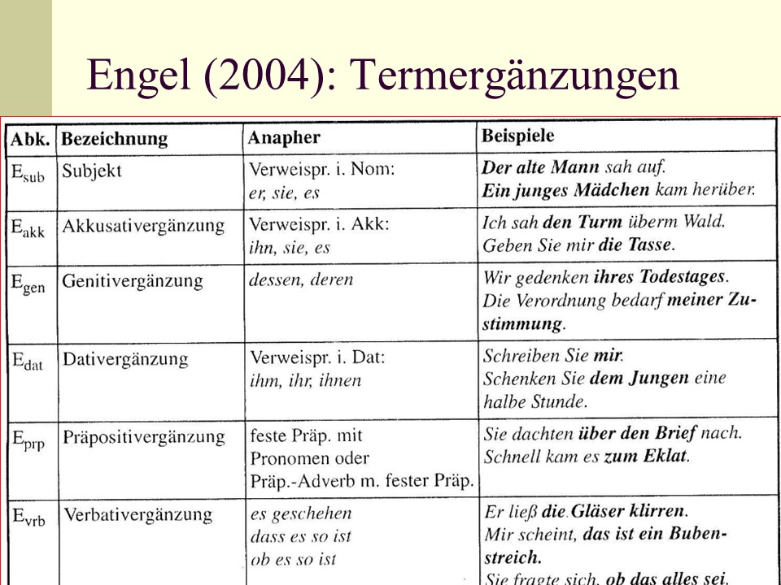
4.4.1 Subjekt
Das Subjekt (Esub) hat verschiedene Ausdrucksformen. Es erscheint als:
- Nominalphrase im Nominativ (1 - 2),
- Pronominalphrase im Nominativ (3 - 4),
- Nebensatz ohne und mit Korrelat es (5),
- Infinitvsatz ohne und mit Korrelat es (6).
- Diese Frau ist unsere Nachbarin.
- Der Löwe mit seiner imposanten Mähne ist der König der Tiere.
- Sie als vernünftiger Mensch sollte das wissen. - Das Kind ist immer so fröhlich. Es versetzt alle Anwesenden in gute Laune.
- Niemand hat das Recht, Sie zu beschimpfen.
- Dass Sie sich so kurzfristig noch bei uns einfinden konnten, freut uns sehr. - Es freut uns sehr, dass Sie sich so kurzfristig noch bei uns einfinden konnten.
- Mit Ihnen zu spazieren, hat mir große Freude bereitet. - Es hat mir wirklich große Freude bereitet, mit Ihnen zu spazieren.
In Beispiel (3) bezieht sich das Pronomen es auf das Kind im vorherigen Satz. Das Pronomen es ist in diesem Fall mit dieser Nominalphrase das Kind austauschbar und daher so wie diese als Subjekt einzuordnen.
Aus den Beispielen (5) und (6) ist ersichtlich, dass das Pronomen es, obwohl es im Nominativ steht, nicht allein das Subjekt darstellt, sondern gemeinsam mit dem Neben- bzw. Infinitivsatz. Es fungiert als Korrelat oder Platzhalter im Hauptsatz für den ausgeklammerten Neben- bzw. Infinitivsatz.
Kongruenz:
Das Subjekt kongruiert (von wenigen Ausnahmen abgesehen) in Person und Numerus mit der finiten Verbform.
Die meisten Verben fordern ein Subjekt, aber nicht alle. Witterungsverben (7) und Empfindungsverben (8) kommen ohne Subjekt vor. Das Personalpronomen es in Beispiel (7) wird nicht als Subjekt gewertet, denn es lässt sich nicht durch andere Ausdrucksformen ersetzen. In solchen Fällen ordnet man das nicht-kommutierbare Pronomen dem Verbalkomplex zu. In Beispiel (8) kommt keine Nominalphrase im Nominativ vor, der Satz ist also subjektlos. Die Dativergänzung bezieht sich auf eine Person, die eine (angenehme oder unangenehme) Erfahrung macht oder Empfindung verspürt.
- Es regnet. Es hagelt. Es schneit. …
- Mir ist kalt. Mir graut es vor diesem Menschen. Rap-Musik gefällt ihr am besten.
Die Dependenzdiagramme (Engel 2008) zeigen den Unterschied zwischen Nominalphrasen in Subjekt- und Objektfunktion an:

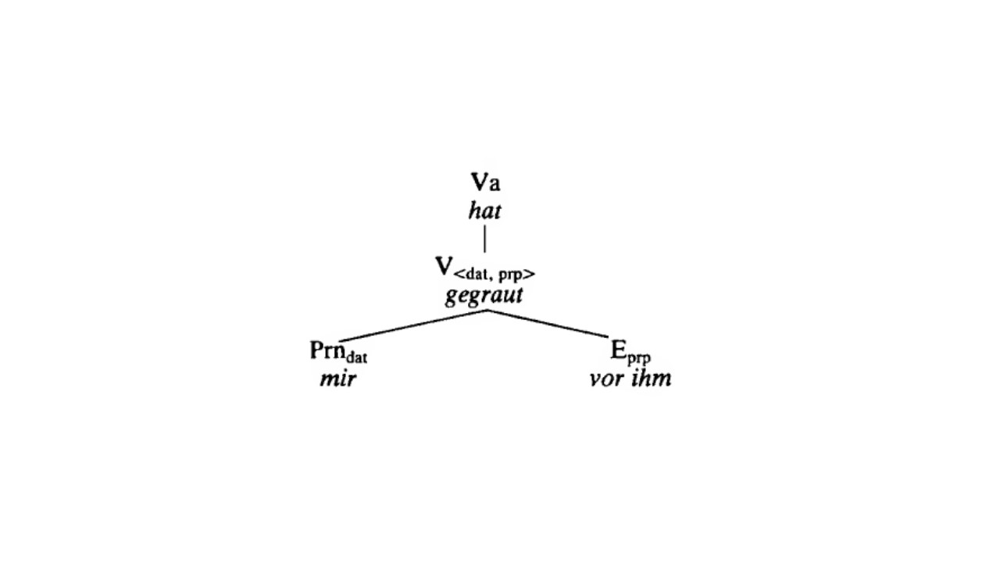
Verbklassen ohne Subjekt sind ein Argument dafür, dass das Subjekt wie andere Ergänzungen von der Verbvalenz abhängen und dass es nicht notwendig ist, dem Subjekt im Valenzmodell eine Sonderrolle einzuräumen. Ein weiteres Argument sind auch semantische Beschränkungen, die durch die Valenz des Hauptverbs festgelegt werden und auch das Subjket betreffen.
Für die Sonderstellung des Subjekts gegenüber anderen Ergänzungen gibt es mehrere Argumente:
- die Kongruenz zwischen Subjekt und finiter Verbform,
- in Infinitivsätzen wird das Subjekt eliminiert,
- das Subjekt ist bei weitem das häufigste Satzglied,
- das Subjekt tritt häufig als erstes Satzglied auf,
- das Subjekt bezieht sich häufig auf den Urheber einer Handlung (Agens),
- das Subjekt nimmt häufig Bezug auf bekannte Information (Thema).
Transformationen:
- Esub (Aktivsatz) ==> Eprp (Passivsatz) in Beispiel (9),
- Esub (Satzglied) ==> Egen (Attribut in NP) in (10).
- Esub (Satzglied) ==> Eprp (Attribut in NP) in (11).
Dependenzdiagrame mit einem Aktiv- und einem Passivsatz aus (Engel 2008):

Aus dem Subjekt eines Aktivsatzes wird im Passivsatz eine Präpositivergänzung (9) und in einer Nominalisierung ein Genitivattribut (Subjektgenitiv, Beispiel 10) oder ein Präpositionalattribut (Präpositivergänzung zum Nomen, Beispiel 11).
- Inge holt den Wagen [am Montag] ab. ==> Der Wagen wird von Inge [am Montag] abgeholt.
- Die Studentin bereitet sich auf eine Prüfung vor. ==> die Vorbereitung der Studentin auf eine Prüfung …
- Der Arzt behandelt eine Privatpatientin. ==> die Behandlung der Privatpatientin durch den Arzt …
4.4.2 Akkusativergänzung
Die Akkusativergänzung (Eakk) wird auch als Akkusativobjekt oder direktes Objekt bezeichnet und hat verschiedene Ausdrucksformen. Sie erscheint als:
- Nominalphrase im Akkusativ (1),
- Pronominalphrase im Akkusativ (2),
- Nebensatz ohne und mit Korrelat es (3),
- Infinitvsatz ohne und mit Korrelat es (4).
- Die Arbeitnehmer fordern eine Gehaltserhöhung.
- Ein Mann ist in eine Wohnung eingedrugen. Die Nachbarin hat es auch gesehen.
- Wir haben nicht erwartet, dass Sie sich so kurzfristig noch bei uns einfinden könnten. - Er schätze es, wenn man ihn freundlich behandelte.
- Wir hoffen, Ihnen ein gutes Angebot machen zu können. - Der Bauer hielt es für ratsam, möglichst früh aufzustehen.
In Beispiel (2) bezieht sich das Pronomen es auf ein Neutrum (ein Ereignis). Das Pronomen es ersetzt in diesem Fall den vorherigen Satz und füllt eine der Leerstellen des Verbs sehen, nämlich diejenige, die für die Akkusativergänzung vorgesehen ist.
Aus den Beispielen (3) und (4) ist ersichtlich, dass das Pronomen es, obwohl es im Akkusativ steht, nicht allein das Objekt darstellt, sondern gemeinsam mit dem Neben- bzw. Infinitivsatz. Es fungiert als Korrelat oder Platzhalter im Hauptsatz für den ausgeklammerten Neben- bzw. Infinitivsatz.
Kongruenz:
Im Deutschen kongruiert die Akkusativergänzung nicht mit der finiten Verbform.
Das linke Dependenzdiagramme (Engel 2008) zeigt einen Satz mit Akkusativergänzung:
Semantik:
Viele Handlungsverben fordern eine Akkusativergänzung, daher ist die Akkusativergänzung die zweithäufigste aller Ergänzungen. Bedeutungsmäßig ist die Akkusativergänzung von Handlungsverben häufig ein Patiens (d.h. ein von der Handlung betroffener oder erzeugter Gegenstand).
Ersatzformen:
Nicht jede Nominalphrase oder Pronomen im Akkusativ ist automatisch eine Akkusativergänzung. Eine Akkusativergänzung identifizieren wir mit einem Personalpronomen im Akkusativ, das jedoch durch andere Ausdrucksformen ersetzbar sein muss, oder mit der Fragestellung Wen oder was?.
- Ich meine es doch gut mit Ihnen.
- Er ist einen Kilometer (weit) gelaufen.
Das Personalpronomen es in Beispiel (5) ist nicht ersetzbar und daher keine Akkusativergänzung (Eakk) sondern gehört zum Verbalkomplex. Es handelt sich umd eine feste Wendung. In Beispiel (6) ist die Nominalphrase im Akkusativ einen Kilometer nicht ersetzbar durch die Anapher im Akkusativ ihn, aber erfragbar durch Wie weit?. Daher ist eine Expansivergänzung (Eexp) die angemessenere Lösung.
Transformationen:
- Eakk (Aktivsatz) ==> Esub (Passivsatz) in Beispiel (7),
- Eakk (Satzglied) ==> Egen (Attribut in NP) in (8).
Dependenzdiagrame mit einem Aktiv- und einem Passivsatz aus (Engel 2008):
Aus der Akkusativergänzung eines Aktivsatzes wird im Passivsatz ein Subjekt (7) und in einer Nominalisierung ein Genitivattribut (Objektgenitiv, Beispiel 8).
- Inge holt den Wagen [am Montag] ab. ==> Der Wagen wird von Inge [am Montag] abgeholt.
- Der Arzt behandelt eine Privatpatientin. ==> die Behandlung der Privatpatientin
Bei vielen transitiven Verben sind Akkusativergänzungen obligatorisch. Ein Beispiel mit fakultativer Akkusativergänzung:
- Wir essen gerade. (ausgelassene Eakk: was essen wir?)
4.4.3 Dativergänzung
Die Dativergänzung, traditionell auch als Dativobjekt oder indirektes Objekt bezeichnet, kommt bei recht vielen transitiven Verben vor, aber sehr oft nur fakultativ.
Ausdrucksformen: Nominal- oder Pronominalphrase im Dativ.
Die Dativergänzung enthält KEINE PRÄPOSITION.
Transformationen:
- Bei Passivierung: unverändert,
- bei Nominalisierung: Edat ==> Eprp
Semantisch gesehen handelt es sich um den Adressaten einer Handlung. Aber es gibt auch eine Reihe von Nominalphrasen im Dativ, die mit einer anderen Bedeutung assoziiert sind und teilweise auch nicht eindeutig subklassenspezifisch sind. Daher spricht man in solchen Fällen gerne von freien Dativen (Dativus possessivus oder Pertinenzdativ, Dativus ethicus, Dativus sympathicus / commodi und incommodi).
- Das Mädchen hilft der alten Frau beim Aufstehen. - Der alten Frau wurde geholfen. - die Hilfe für die alte Frau
- Er schreibt seiner Freundin in dieser Woche schon den dritten Liebesbrief. (Edat = Adressat)
- Der Sohn reinigt seinem Vater das Auto. (für seinen Vater / statt seines Vaters = Benefaktiv oder Nutznießer der Handlung)
- Mir ist die Vase heruntergefallen. (Dativus incommodi: der Person ist ein Mißgeschick widerfahren)
- Du bist mir auf den Fuß getreten. (Dativus possessivus: auf meinen Fuß)
- Du bist mir ein schöner Freund! (ethischer Dativ: innere Anteilnahme des Sprechers an Handlung)
- Dass du mir ja nicht zu spät nach Hause kommst! (ethischer Dativ: innere Anteilnahme des Sprechers am Geschehen)
Während die prototypische Dativergänzung (Bedeutug: Adressat) im Satz betonbar und erststellenfähig (vorfeldfähig) ist, gibt es bei den sogenannten freien Dativen Beschränkungen oder andere Ersatzmöglichkeiten:
- der ethische Dativ ist weder betonbar noch vorfeldfähig;
- der Dativus sympathicus ist mit einer Präpositionalphrase ersetzbar (für jemanden / statt jemandes),
- der possessive Dativ ist in ein possessives Attribut zu einem Nomen umwandelbar (eine Teil-Ganzes-Beziehung liegt demnach vor).
4.4.4 Genitivergänzung
Die Genitivergänzung (Egen), auch als Genitivobjekt bezeichnet, ist im Gegenwartsdeutschen auf eine kleinere Gruppe von Verben beschränkt. Viele davon gehören in den juristischen Sprachgebrauch. Bei manchen Verben konkurriert die Genitivergänzung mit anderen Termergänzungen, z.B. mit der Präpositivergänzung (1).
- Sie erinnerte sich noch sehr gut jenes Tages. - Sie erinnnerte sich noch sehr gut an diesen Tag.
Ausdrucksformen:
- Nominal- oder Pronominalphrase im Genitiv (2 - 3),
- Nebensatz oder Infinitivsatz (4 - 5).
- Dieses schlimmen Tages entsann sich noch sehr gut.
- Dessen bedarf es wohl nicht mehr.
- Seine Mitarbeiter beschuldigten ihn, dass er einen Verstoß gegen die Geschäftsordnung begangen hatte.
- Seine Mitarbeiter beschuldigten ihn, einen Verstoß gegen die Geschäftsordnung begangen zu haben.
Identifikation:
- Anapher dessen (Maskulinum, Neutrum) bzw. deren (Femininum),
- Frage wessen?
Transformation:
Bei Passivtransformationen ändert sich die Form einer Genitivergänzung nicht, bei Nominalisierung wird sie - falls überhaupt möglich - in eine Präpositivergänzung umgewandelt.
- Man bezichtigte ihn des Diebstahls. ==> Er wurde des Diebstahls bezichtigt.
- Er hat sich der Stimme enthalten. ==> die Enthaltung bei der Abstimmung / Stimmabgabe
Genitivergänzungen sind teils obligatorisch, teils fakultativ. Bei einigen Verben kommen sie gemeinsam mit Akkusativergänzungen vor.
Im Gegensatz zu den Genitivergänzungen, die als Satzglieder zu Verben treten, kommen Genitivattribute, seien es nun Angaben oder Ergänzungen, in vielen Texten, insbesondere in Fachtextsorten, Publizistik und wissenschaftlicher Literatur ziemlich häufig vor.
4.4.5 Präpositivergänzung
(in anderen grammatischen Werken in der Regel deckungsgleich mit den Kategorien Präpositionalergänzung (E4; Eprp; pS), Präpositionalobjekt)
Die Eprp ist eine relativ neue “Entdeckung” im Bereich der deutschen Grammatik. In nicht wenigen Grammatiken, auch in einigen neueren, wird sie nicht als selbständig Ergänzungskategorie aufgeführt. Woran das liegen mag, lässt sich anhand von Beispielen wie den folgenden erkennen.1
z.B.
(1) Sie denkt an ihren Freundin der Armee.
(2) denken an, fragen nach, sie freuen auf/über, rechnen mit, …
Präpositivergänzungen Eprp ähneln den Situativergänzungen Esit und Direktivergänzungen Edir.
Aber welcher grundlegende syntaktische Unterschied besteht zwischen Eprp - Esit, Edir ?2
z.B.
(3) Er fährt nach Bamberg /ans Meer/ ins Gebirge.
(4) Wir denken an den Urlaub/an ihn/ daran.
(5) Er fährt (dorth)in.
Unterschied zwischen Eprp und Esub, Eakk, Edat, Egen:
1Die Eprp hat im Gegensatz zu Subjekt, Akkusativ-, Dativ- und Genitivergänzung keine bestimmten Kasussendungen zur Identifizierung.
Die Eprp haben viele verschiedene Präpositionen (2), die verschiedene Kasus regieren (können).
Unterschiede zwischen Eprp und Edir / Esit:
2 (a) Ein Austausch der Präpositionen in eine Eprp ist grundsätzlich nicht möglich und führt gewöhnlich zu ungrammatischen Sätzen (zu Sonderfällen wie protestieren für/gegen siehe unten).
(b) In einer Eprp ist die Präposition immer enthalten (außer wenn sie als satzförmige Ergänzung (SE) auftritt), also auch in Anaphern (z. B. an ihn denken, daran denken)
(c) Die Präp.
einer Eprp sind ohne Eigenbedeutung, worin sich zeigt, dass die Präposition in ihrer Funktion mit einer Kasusendung vergleichbar ist.
Aber wie soll man die folgenden Fälle beurteilen?
z.B.
(6) Die Ärzte halten den Mann für tot.
(7) Meine Freundin hält nichts davon, kurze Röcke zu tragen.
(8) Er besteht auf sein Recht.
(9) Das Haus besteht aus Steinen.
(10) Die Prüfung besteht in einer schriftlichen Arbeit.
(11) Er kann vor den Augen seiner Familie bestehen.
Beim Austausch der Präp. ändert sich die Bedeutung des Verbs. Im Grunde kann man in solchen Fällen sogar behaupten, dass es sich um verschiedene (homophone oder gleichlautende) Verben handelt, die sich darin unterscheiden, dass in den von ihnen verlangten Ergänzungen nicht die gleichen Präpositionen auftreten.
Vgl. (12) Er wohnt am Stadtrand / in Belgien / neben dem Supermarkt.
Warum würden Sie (bei Berücksichtigung der oben angeführten Kriterien zur Unterscheidung zwischen Eprp und Edir / Esit) folgende Präpositionalphrasen als Eprp einordnen bzw. warum als Esit/ Edir?
z.B.
(13) Der Opa erzählt (seinen Enkeln) über sein Leben.
(14) Der Chef erzählt (uns) von seinen Plänen.
(15) Die Tante erzählt (ihrem Neffen) aus ihrem Leben.
(16) Günther freut sich am Glück anderer.
(17) Die Kinder freuen sich auf die Ferien.
(18) Carola freut sich über ihren Erfolg.
Die Präp. wirken bedeutungsdifferenzierend, obwohl die Unterschiede schwer fassbar sein können. In (13) und (14) sind wahlweise verschiedene Präp. ohne Bedeutungsunterschiede zugelassen. Die Präposition aus in der Eprp in (15) legt eine partitive Interpretation nahe (“ein Ausschnitt aus ihrem Leben”). In (17-18) wird die jeweilige Sonderbedeutung aus der Verbindung zwischen dem Verb sich freuen und einer der beiden Präp. hergeleitet (Bezug auf Gegenwärtiges/Zukünftiges (17) bzw. Bezug auf Vergangenes (18)).
Wie kann man problematische Fälle wie in (19-20) beurteilen?
z.B. (19) Er schreibt für die Abschaffung des Paragraphen 218. (20) Er schreibt gegen die Abschaffung des Paragraphen 218.
Bei schreiben (= schriftlich Partei ergreifen) haben die Präp. eigene scharf unterschiedene Bedeutungen.
Aber das Paradigma ist auf zwei Antonyme beschränkt, es fehlt die relativ freie Austauschbarkeit der Präp. wie sie für die Esit, Edir, typisch ist. Ähnliche Fälle: sein, stimmen, eintreten, sich entscheiden + für / gegen (paraphrasierbar durch zugunsten von + D bzw. zuungunsten von + D).
Welchen Status hat die Präposition?
(a) Sollte man die Präposition einer Eprp zum Verb rechnen oder
(b) sollte man sie zusammen mit der NP bzw.
PrnP als Eprp aufführen?
Drei Gründe gegen die Lösung (a), d.h. dagegen, dem regierenden Verb die Präp. der Eprp zuzurechnen (obwohl die Präp. der Eprp fest mit dem Verb verbunden ist, was sich beispielsweise in der Eigenschaft der Präposition zeigt, wie ein Kasusmorphem zu fungieren):
1. die Präposition bildet mit den von ihr abhängigen Elementen eine Präpositionalphrase, die durch Lösung (a) auseinander gerissen würde.
2. Viele Eprp sind fakultativ.
Das macht eine Integration der Präp.
in das regierende Verb unzweckmäßig.
Bei jedem Verb mit fakultativer Eprp müsste man (statt einer gleich) zwei Wörterbucheinheiten ansetzen (z.B. sich erinnern und sich erinnern an ).
Dies würde zu einer gewaltigen Aufblähung des Lexikons führen.
[Anmerkung: Für Erst- und Zweitsprachenlerner schwerer zu erlernen.]
3. Es gibt Verben, die zwei Eprp mit verschiedenen Präp. regieren, deren NPs in unterschiedlichen Kasus auftreten können (z. B. sprechen mit + D über + A).
Mindestens eine Eprp muss aktualisiert sein, aber es können auch beide gemeinsam auftreten.
Der Einbau der Präpositionen in die VP wäre daher auch aus diesem Grunde schwierig.
z.B.
(22) Er meldet sich in der Zentrale beim Operateur.
(23) Ich mache das mit dem Hammer.
(instrumental)
(24) Inge geht mit ihrem Freund ins Kino.
(komitativ)
(25) Walter geht mit dem Schirm in die Stadt.
(komitativ)
Engel & Schumacher (1978: 65) setzen in (22) neben der Lokalangabe (in der Zentrale) noch eine Eprp (beim Operateur) an. Die bei-Phrase wird als Eprp gewertet, da die Präposition nicht kommutiert (d. h. nicht austauschbar ist, ohne die Funktion der Phrase im Satz zu verändern). Sonst sind bei-Phrasen meist als Esit zu werten. In (23-24) scheint es Latour (1985: 65) im Gegensatz zu Engel & Schumacher (1978: 65), dass die Komitativbestimmungen dennoch nur bei bestimmten Verben vorkommen (also subklassenspezifisch sind). Dies soll laut Latour auch bei den Instrumentalbestimmungen der Fall sein.
Kommutation:
(23) mittels, mit Hilfe (von), unter Verwendung (von), …
(24) in Begleitung (von), in Gesellschaft (von), unter Mitnahme (von), nicht ohne.
Anaphern:
a) Präposition + Pronomen (besonders bei Menschen, teilweise bei Tieren)
b) da(r)- + Präposition “Pronominaladverb” bei Sachen, teilweise auch bei Tieren)
Die Grenze zwischen a) und b) ist fließend, insbesondere bei Tieren, aber auch bei Institutionen (die Organisationseinheiten von Personengruppen darstellen) ist die Zuordnung nicht immer eindeutig.
Ausdrucksformen.
Charakteristisch für die Eprp (in Engel & Schumacher: E4) ist ihre morphosyntaktische Vielfältigkeit: - Präp.
+ NP
- Präp + PrnP
- Pronominaladverb (Präpositionaladverb)
- Nebensatz ± Korrelat
- Infinitivsatz ± Korrelat
z.B.
(25) Der Text handelt von Umweltproblemen.
(26) niemand denkt an ihn.
(27) Ich habe nichts damit zu tun.
(28) Ich warte darauf, dass du kommst.
Er denkt darüber nach, ob er kommen soll.
Wir erkundigen uns, wann die Vorstellung beginnt.
(29) Er besteht darauf, die Wahrheit zu erfahren.
selten : Präp.
+ Adj (Engel & Schumacher 1978), (Latour 1985:61)
z.B. (30) Alle halten ihn für genial. (Helbig & Buscha 1987: Prädikativ)
Das Korrelat ist oft fakultativ, manchmal jedoch obligatorisch. Wenn ein Verb mehrere Präpositionen regiert, die bedeutungsdifferenzierend wirken, dann ist das Korrelat obligatorisch.
Die Eprp kommt bei ziemlich vielen Verben vor, nur fakultativ und nicht selten doppelt (Latour 1985: 62, 66)
Transformationen: (Helbig & Buscha 1987: 547)
z.B.
(31) Man wartete auf die ausländische Gäste.
Auf die ausländischen Gäste]{.underline} wurde gewartet.
Es wurde auf die ausländische Gäste gewartet.
(32) Die Regierung hofft auf bessere Beziehung.
Die Hoffnung der Regierung auf die bessere Beziehung.
(33) Er schreibt an seinen Vater einen Brief.
Er schreibt seinem Vater einen Brief.
(34) Sie erinnert sich an ihre Kindheit.
Sie erinnert sich ihrer Kindheit.
Bei der Passiv- oder Nominalisierungstransformation bleibt die Präpositivergänzung gewöhnlich unverändert.


4.4.6 Situativergänzung
E5 , Esit ; pS/Adv , pSA
Lokale wie temporale Esit benennen die Situation, in die ein Sachverhalt eingebettet ist. Deshalb wird diese Art von Ergänzung im Mannheimer Valenzmodell auch Situativergänzung genannt (sie entspricht der Ergänzungsklasse E5 in Engel & Schumacher 1978: 68 ff). Der Terminus “adverbiale Umstandsbestimmung des Ortes (bzw. der Zeit) in der deutschen Schulgrammatik verwischt (nach Latour 1985: 65) den Unterschied
zwischen verbspezifischen und nichtverbspezifischen Satzgliedern und
zwischen Esit und Edir, die u.a. durch spezifische Anaphern unterscheidbar sind.
Welche Klassen von Verben verlangen eine Esit ?
z.B.
sein, sich befinden, liegen, stehen, sitzen, wohnen, hängen, kleben, stecken, …
beginnen, anfangen, stattfinden, passieren; beißen, …
Die Esit kommt vor allem bei den Verben des räumlichen Sich - Befindens vor, seltener bei anderen Verben, bei denen das Geschehen zeitlich näher bestimmt wird. [Engel 1988: 194 ff]. In der Grammatik von Engel werden auch einige wenige Verben zu dieser Klasse gezählt, die eine kausale Situativergänzung erfordern (z. B. beißen).
Anapher:
lokal (da, dort) (da(r) + Prät)
temporal (dann)
kausal (deshalb)
Innerhalb einer Ergänzungskategorie liegen somit drei (zumindest) unterschiedliche Anaphorisierungsmöglichkeiten vor. Warum haben die beiden Vertreter des Mannheimer Valenzmodells (Engel und Schumacher) trotzdem nur eine Ergänzungsklasse und nicht zumindest zwei verschiedene (lokale + temporale) Ergänzungsklassen gebildet ? Laut Latour (1985: 66) taten sie dies eher aus praktischen Gründen, denn Verben mit einer temporalen Esit sind nicht besonders häufig. Daher hat man beide in einer E - Kategorie zusammengefasst. Noch seltener sind Verben mit einer kausalen Situativergänzung. Die meisten Kausalbestimmungen haben nämlich Angabestatus, d.h. sie sind nicht spezifisch für bestimmte Verbklassen.
Wodurch unterscheidet sich die Situativergänzung Esit von der Präpositivergänzung Eprp?
z.B. (3) Dort In ihr befand sich ein brauner Briefumschlag. Auf ihr Unter ihr
- Auf sie / auf dein Entgegenkommen wartet er schon die ganze Zeit.
In (3) erscheinen Situativergänzungen, in (4) eine Präpositivergänzung.
Wesentliche Kennzeichen der Esit sind
- dass die Esit ohne Präposition vorkommen kann,
- dass die Präposition prinzipiell austauschbar ist,
- dass die Präposition in Esit eine eigene Bedeutung hat und
- dass die Esit als Kategorie eine eigene Bedeutung hat; (bei der Eprp als Kategorie ist eine solche spezifische Eigenbedeutung nicht zu erkennen, was sie mit den restlichen Objekten, der Akkusativ-, Dativ- und Genitivergänzung, vergleichbar macht), d.h. die Esit ist nicht nur syntaktisch, sondern auch semantisch als Kategorie (bzw. als zwei oder drei Kategorien sogar) bestimmbar.
Welche Ausdrucksformen hat die Esit ?
z.B.
(5) In der Kiste lag ein brauner Briefumschlag.
(6) In ihr lag ein brauner Briefumschlag.
(7) Darin lag ein brauner Briefumschlag.
(8) Dort lag ein brauner Briefumschlag.
(9) Diese Leute wohnen, wo der Weg zum Wald abbiegt.
[Engel 1988: 195]
Die Esit erscheint in (5) und (6) als Präpositionalphrase (d. h. als Präposition + NP (5) bzw. als Präp. + PrnP (6)), als Präpositionaladverb (7), Adverb (8) und wie die meisten anderen Ergänzungsklassen auch als generalisierende Nebensätze (9) oder indefinite Nebenätze.
Nach Engel (1988: 195) ist die Esit immer obligatorisch. Fakultative Situativbestimmungen (10) betrachtet er als Angaben (mit jeder Art von Verb verbindbar).
(10) Das Mädchen las in ihrem Zimmer einen spannenden Arztroman und vergaß, zu ihrer Verabredung mit dem tollsten Junge in der Klasse zu gehen.
Transformationen:
z.B.
(11) Familie Meier wohnt in einem Hochhaus.
==> Das Wohnen der Familie Meier in einem Hochhaus.
(12) Man stand dort nur herum.
==> Dort wurde nur herumgestanden.
(Passiv mit intransitiven Verben seltener)
In den Beispielen (11) und (12) ist zu sehen, daß die Situativergänzung bei einer Nominalisierungs- oder bei einer Passivtransformationen unverändert bleibt.


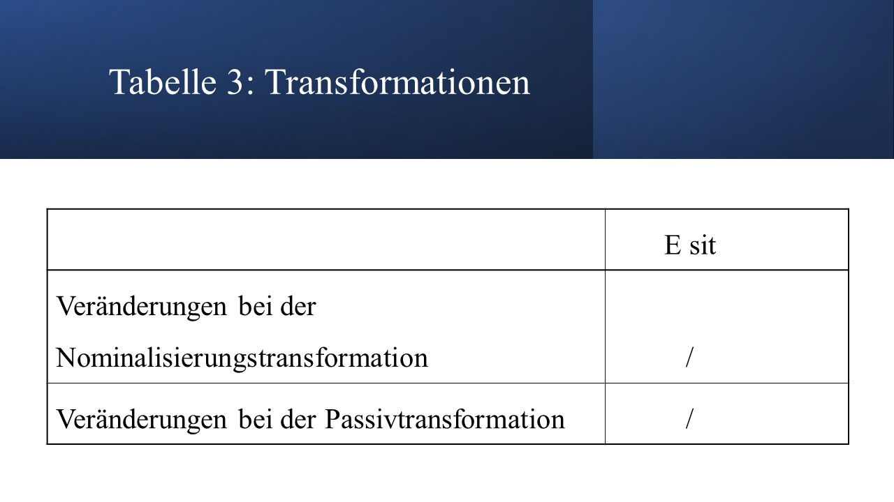
Weitere Beispiele und Erläuterungen zur Situativergänzung aus Latour (1985)
Verben mit der Situativergänzung
Zur Valenz einer Reihe von Verben gehört eine Situativergänzung, die in meisten Fällen auch obligatorisch ist.
Beispiel: München liegt an der Isar.
*München liegt.
Die gleiche morphosyntaktische Struktur wie die Esit haben die situative Angaben.
Beispiel Er hat mir die Geschichte an der Isar erzählt.
Eine temporale Esit erscheint selten, bei Verben wie stattfinden, passieren , beginnen.
Beispiel: Die Diskussion begann am frühen Abend.
Es gibt einige Präpositionen mit lokaler Bedeutung, die sich nicht nur mit Hilfe von Adverbien anaphorisieren lassen, sondern auch durch die Anapher da(r)- + Präposition (die ja gerade für die Präpositivergänzung Eprp charakteristisch ist). Solche Präpositionen sind:
hinter (dahinter)
neben (daneben)
unter (darunter)
zwischen (dazwischen)
in (darin)
über (darüber)
vor (davor)
Bei den Präpositionen an und auf ist diese Art der Anaphorisierung nur beschränkt möglich.
Beispiele: Eine Kugel hängt am Tannenbaum.
Eine Kugel hängt daran.
Monika steht an der Haltestelle.
Monika steht *daran.
Das Buch liegt auf dem Tisch.
Das Buch liegt darauf.
Fritz steht auf dem Bahnsteig.
Fritz steht *darauf.
Bei anderen lokalen Präpositionen wie außerhalb, bei, diesseits, gegenüber, innerhalb, inmitten, oberhalb u.a. ist nur die Anaphorisierung mit da und dort möglich. Die Ausdrucksform der Esit ist dann eine adverbiale Partikel oder eine Präpositionalphrase, wobei die Präposition austauschbar ist.
Beispiele: Das Schloss befindet sich dort.
Das Schloss befindet sich da oben.
Das Restaurant liegt hinter dem Berg.
Das Restaurant liegt im Wald.
(Latour 1985: 66, 67 ff)
4.4.7 Direktivergänzung
E6, Edir; pS/Adv (pSA); Richtungsergänzung, Adverbialbestimmung
Diese Ergänzungsklasse lässt sich (gemäß Engel 1988: 195) mit sehr vielen Verben verbinden. Eine wichtige Teilmenge der “Direktivverben” sind in (1) zu sehen. Welche ?
z.B. (1) gehen, fahren, fliegen, kommen, ziehen, drehen, …
Es sind die Verben der Fortbewegung.
Ausdruckformen: [Engel 1988: 195]
z.B.
(2) Er stürzte sich auf das Tier.
(3) Er stürzte sich auf den mit der Brille.
(4) Er stürzte sich darauf.
(5) Er stürzte sich hinein.
(6) Er ging, wohin der Wind ihn trieb.
Die Direktivergänzung erscheint in (2) und (3) als Präpositionalphrase (als Präp.+NP (2), als Präp.+PrnP (3)), als Präpositional-/Pronominaladverb (4), als Adverb (5) sowie als generalisierender / indefiniter Nebensatz (6).
Unterscheidung zwischen Edir und Eprp? Siehe auch Esit!
Wesentliche Kennzeichen der Edir sind
a) dass die Edir ohne Präposition vorkommen kann,
b) dass die Präposition prinzipiell austauschbar ist,
c) dass die Präposition in Edir eine eigene Bedeutung hat und
d) dass die Edir als Kategorie eine eigene Bedeutung hat; (bei der Eprp als Kategorie ist eine solche spezifische Eigenbedeutung nicht zu erkennen, was sie mit den restlichen Objekten, der Akkusativ-, Dativ- und Genitivergänzung, vergleichbar macht), d.h.
die Edir ist somit nicht nur syntaktisch, sondern auch semantisch als Kategorie (bzw. als mehrere Kategorien sogar) bestimmbar.
Anaphern:
Die Edir unterscheidet sich von den übrigen bisher behandelten Ergänzungsklassen (Subjekt, Akkusativ-, Dativ- und Genitivergänzung; im geringeren Maße jedoch von der zuvor behandelten Situativergänzung) durch die Uneinheitlichkeit und Unübersichtlichkeit ihrer Anaphorisierungsverhältnisse. Stellen Sie in den folgenden Beispielen jeweils eine geeignete Anapher für die folgenden Edir fest!
z.B.
(7) Klaus fährt nach Osnabrück.
(8) Der Zug kommt aus Braunschweig.
(9) Wir kommen diesmal nicht über Göttingen.
(10) Der Wagen drehte sich um seine Achse.
Je nach Bedeutung sind folgende Anaphern geeignet und damit Subklassen von Direktivergänzungen unterscheidbar:
4.4.7.1 Subergänzungsklassen
- Ziel der Bewegung - dahin, dorthin, hin
- Ausgangspunkt der Bewegung - von dort, von dorther, von daher
- passierter Bereich - darüber
- umgangener Bereich - darum, herum
Die Anaphorisierungsverhältnisse bei der Edir sind aber noch komplizierter:
Stellen Sie in den folgenden Sätzen die geeigneten Anaphern für Edir fest !
z.B.
(11) Er platzt in die Gesellschaft hinein.
(12) Peter wandert in die USA aus.
(13) Der junge Vögel fällt aus dem Nest.
(14) Der erschossene Gangster fiel aus dem Wagen.
(15) Wir kommen nicht über Österreich.
(16) Fritz steigt über den Zaun.
(11,12) - Ziel -
(11) hinein, darein, herein, *dahin, *dorthin
(12) *hinein, *darein, *herein, dahin, dorthin
(13,14) - Ausgangspunkt
(13) daraus, her-/hinaus, her-/hinunter, *daher, *dorther
(14) daraus, hin-/heraus, *hin-/herunter, *daher, *dorther
(15,16) - passierter Bereich
(15) darüber, *hin-/herüber,*dahin, *daher
(16) darüber, hin-/herüber, *dahin, *daher
Die Anaphorisierungsprobe, die sich bei der Bestimmung des Subjekts, der Akkusativ-, Dativ-, Genitiv- und Situativergänzung als taugliches Testverfahren zur Identifikation und Abgrenzung verschiedener Ergänzungsklassen bewährt hat, liefert nun sogar für Beispielsätze innerhalb einer Subergänzung unterschiedliche Ergebnisse. Die Beispiele haben gezeigt, daß offenbar mit zwei verschiedenen Typen von Anaphern innerhalb einer Edir gearbeitet werden muss:
- Partikelanaphorisierung (Anaphorpart)
(da- / dort-) hin / her
- Pronominaladverbiale Anaphorisierung (Anaphpronadv)
da(r) + Präp, hin + Präp., her + Präp
Die Subergänzungen passierter Bereich und umgangener Bereich sind nur durch b) Anaphpronadv anaphorisierbar.
[Latour 1985: 71; 68 - 83 weitere Beispiele und Hinweise]
Es gibt eine kleine Gruppe von Verben (Latour 1985: 68 ff), bei denen eine Zuordnung zur Edir nicht eindeutig ist. Vergleichen Sie die folgenden Beispielsätze !
z.B.
(17) Er verschwand in ein / in einem Nebenzimmer.
(18) Er schreibt auf ein / auf einem Blatt Papier.
(19) Er versuchte in die / in der Sparkasse einzubrechen.
(20) Er trug das Bündel, in eine / in einer Zeitung eingewickelt, zum Bahnhof.
Aber: (21) Er wickelte das Bündel in eine Zeitung.
Diese Verben (hier nicht vollständig aufgezählt) markieren einen Überschneidungsbereich zwischen Esit und Edir. Aber sonst sind Esit und Edir relativ klar abgrenzbar. [weitere Hinweise: Latour 1985: 68]
Bei den Subergänzungen “passierter” bzw. “umgangener Bereich” ist nur Anaphpronadv möglich (Latour 1985: 82). Aber welche Ergänzung wird ebenfalls durch Anaphpronadv identifiziert? Wie kann man die Edir und die andere Ergänzungsklasse dennoch voneinander abgrenzen?
z.B.
(22) Der Zug fährt durch den Tunnel.
(23) Der Weg fährt um den See.
(24) Ich sehe ein Problem in dieser Sache.
(25) Wir wählen Paul in den Betriebsrat.
Neben bereits oben genannten Unterschieden zwischen Edir und Eprp können noch zwei weitere hinzugefügt werden.
- Eine Edir kann man durch die folgenden Formen anaphorisieren:
- “da(r) + Präp.”
- “hin- / her- + Präp.”
Die Eprp kann hingegen durch die folgenden Formen anaphorisiert werden:
- “da(r) + Präp.”
- “Präp. + Pron.”
2. Die Anaphern zu Edir in (25) offenbaren noch einen weiteren (leicht übersehbaren) Unterschied:
Die Präposition in einer Edir wird bei Anaphpronadv zu - ein, bei Eprp bleibt sie - in.
Edir sind teilweise obligatorisch, teils fakultativ. Von fakultativen Edir sprechen Engel & Schumacher (1978: 71), wenn dem betreffenden Element ein besonders hoher Erwartungsgrad und damit eine spezifische Relation zum Verb zugeschrieben wird. Im anderem Falle, wenn diese Bedingung nicht erfüllt wird, liegt eine Direktivangabe vor.
Vergleichen Sie !
z.B.
(26) Der Vogel fliegt (nach Süden).
(27) Er keuchte (den Gang entlang).
(28) Er lächelte (hinüber).
[Engel & Schumacher 1978: 71]
In (27) und (28) liegen gemäß Engel & Schumacher Angaben vor; die Verben dort kommen nur unter besonderen Kontextbedingungen mit Direktivangabe vor.
Es ist gelegentlich kritisiert worden, daß die Edir und die Esit “semantisch definiert” seien, während beispielsweise die Esub und die Eprp morphologisch definiert sind, d.h. dass die Kriterien für die Klassifikation der E disparat seien. Dazu Engel & Schumacher (1978: 71 ff):
- Die E beruhen auf Kommutationsreihen, die bereits erhebliche semantische Voraussetzungen machen (die Elemente, die einander entsprechen - miteinander kommutieren, können semantisch ja nicht beliebig sein, wenn man sinnvolle Sätze bilden will).
- Hierin liegt also kein Unterschied zwischen Edir und Esit einerseits und Esub und Eprp andererseits.
- Die Doppelnatur des sprachlichen Zeichen (Inhalts- und Ausdrucksseite): Man kann zwar keine grundsätzliche 1 : 1 Entsprechung zwischen Inhalts- und Ausdrucksseite feststellen, was aber nicht unbedingt bedeutet, daß sich zu oberflächensyntaktisch ermittelten Kategorien stellenweise keine semantische Entsprechungen ergeben können; stellenweise fehlen solche semantischen Entsprechungen allerdings (nämlich bei Esub, Eakk, Edat, Egen, Eprp).
Anmerkung: Das Subjekt transitiver Verben ist recht häufig Agens (d.h. Verursacher einer Handlung), die Akkusativergänzung recht häufig Patiens (d.h. betroffener oder erzeugter Gegenstand einer Handlung oder - seltener - Person einer Handlung), die Dativergänzung dagegen des öfteren Adressat (d. h. meist eine Person, an die die Handlung gerichtet ist). Zu charakteristischen semantischen Interpretationen letzterer Ergänzungsklassen siehe auch Helbig & Buscha 1987 (unter den semantischen Satzmodellen).
Transformationen :
z.B.
(29) Die Vögel ziehen in den Süden.
==> Der Zug der Vögel in den Süden.
(30) Man treibt die Stiere durch die Straßen Pamplonas.
==> Die Stiere werden durch die Straßen Pamplonas getrieben.
Bei Passiv- oder Nominalisierungstransformationen bleibt die Edir unverändert.
Im Duden (1973: 488 ff) setzt man statt Esit und Edir (E6, E7 in Engel & Schumacher 1978) folgende Ergänzungsklassen an: Raumergänzung, Zeitergänzung, Begründungsergänzung.
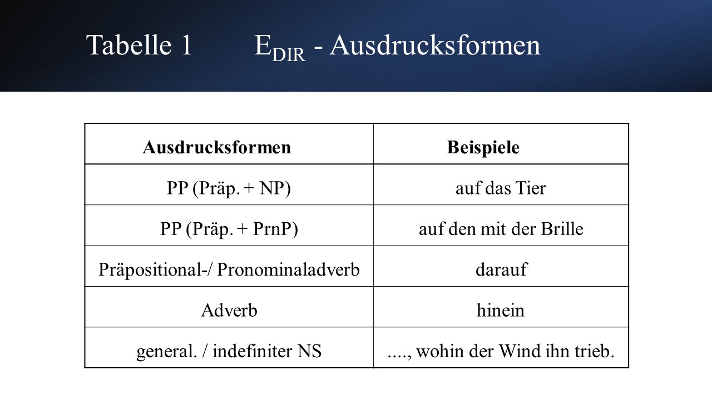
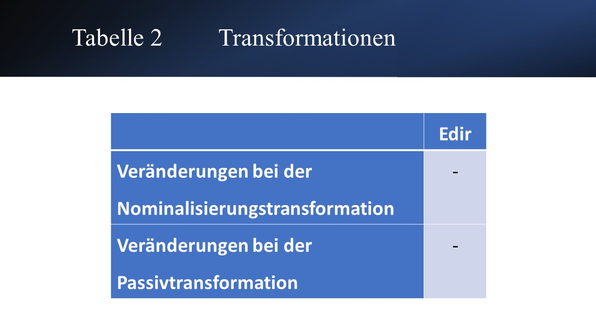
Weitere Beispiele und Erläuterungen zur Direktivergänzung
Nach Latour (1985: 69 ff) gibt es noch einige Verben, bei denen eine Zuordnung sowohl zu Edir als auch zu Esit möglich ist. Diese Verben haben alle den trennbaren Verbzusatz ein-. Die Präposition ist in den meisten Fällen in und ist nicht kommutierbar (d. h. sie kann nicht gegen eine andere Präposition ausgetauscht werden), was bei den Esit und den Edir sonst nicht vorkommt.
Beispiele: einbrechen in der / die Sparkasse
sich einpendeln auf ein / einem bestimmtes (-en) Niveau
sich einreihen in der / die Schlange der Wartenden
etwas einzeichnen in der / der Karte
jemanden einsperren in
sich einbürgern in
sich eingewöhnen in
Bei Verben wie einbetten, einklammern, einstufen, eintätowieren, einwachsen, einweben und anderen, die sonst mit der Direktivergänzung vorkommen, ist in Konstruktionen mit Partizip II alternativ auch eine Situativergänzung möglich.
Beispiel: Er wickelte das Bündel in eine Zeitung ein.
(Edir)
Er trug das Bündel, in eine / einer Zeitung eingewickelt, zum Bahnhof.
( Edir / Esit)
Diese Verben kennzeichnen einen Überschneidungsbereich zwischen den beiden Ergänzungen, aber trotzdem handelt sich um Kategorien, die ansonsten klar voneinander abgegrenzt werden können.
Anmerkung: Auch im Slowenischen gibt es entsprechende Überschneidungen zwischen Direktiv- und Situativergänzungen.
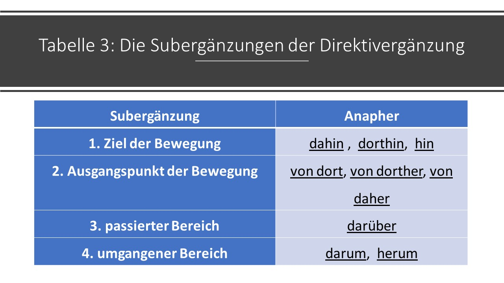

Beispiele:
1. Ziel der Bewegung
an
Uwe geht { ans Ufer.
dahin, dorthin, *daran
Er schraubt sein Namenschild { an die Tür.
daran, *dorthin, * dahin
Häng bitte das Bild { an die Wand.
daran, dahin, dorthin
auf (weitere Besonderheiten: Latour 1985: 73)
Morgen steigen wir { auf den Feldberg.
darauf, hinauf, *dahin, * dorthin
Gisela drückt { auf den Knopf.
darauf, *hinauf, *herauf, *dahin, *dorthin
gegen
- Der Wind dreht { gegen Osten.
dahin, dorthin, *dagegen
- Fritz fährt den Wagen { gegen einen Laternenpfahl.
dagegen, *dahin, *dorthin
hinter
Der Ball fliegt { hinter das Tor.
dahinter, dahin, dorthin
in
- Karin geht { in die USA.
dahin, dorthin, *darein, *hinein, *herein
Sonja fährt { ins Gebirge.
dahin, dorthin, *darein, *hinein, *herein
( a- Ländername enthalten; b- großräumigen Bewegungen)
- Lisa schlägt einen Nagel { in die Wand.
darein, hinein, *dahin, *dorthin
(kleinräumige Bewegungen)
nach
- Wir fuhren { nach Heidelberg / Madagaskar.
dahin, dorthin, *danach
(Ortsname, Ländername)
- Fritz greift { nach dem Wecker.
danach
(kleinräumige Bewegung !)
neben
Christian setzt sich { neben den Brunnen.
daneben, dorthin, dahin
unter
Der Ball rollt { unter den Schrank.
darunter, dahin, dorthin
vor
Anne fährt den Wagen { vor die Garage.
davor, dahin, dorthin
zu
Bernd bringt den Koffer { zum Bahnhof.
dahin, dorthin
zwischen
Friedrich fährt den Wagen { zwischen die beiden Bäume.
dahin, dorthin, dazwischen
Karl legt ein Lesezeichen { zwischen die Seiten.
dazwischen, *dahin, *dorthin
(Kleinräumigkeit !)
2. Ausgangspunkt der Bewegung
aus
- Der Zug kommt { aus Braunschweig / Frankreich.
daher, dorther, * daraus, *heraus
(Ortsname, Ländername)
- Der junge Vogel fällt { aus dem Nest.
daraus, heraus, hinaus, hinunter, herunter, *daher,
*dorther (vertikale Bewegung)
Der erschossene Gangster fiel { aus dem Wagen.
daraus, hinaus, heraus, *daher, *hinunter,*herunter
(vertikale und horizontale Bewegung)
- Fritz steigt { aus dem Fenster.
daraus, hinaus, heraus, *daher, *dorther
von
- Der Wind weht { von Norden.
daher, dorther, *davon (weiträumige Bewegungen)
- Robert fällt { von der Leiter.
hinunter, herunter, *davon, *daher, *dorther
- Monika nimmt die Decke { vom Tisch.
weg !
*davon, * daher, *dorther, *herunter
3. Passierter Bereich
durch
Jürgen fällt { durch die Glasscheibe.
dadurch, hindurch, *dahin, *daher
Wir fuhren { durch Italien.
dadurch, hindurch, *dahin, *daher
(direktionale Bewegung)
über
- Wir kommen nicht { über Frankfurt / Österreich.
darüber, *hinüber, *herüber, *dahin, *daher
- Nina steigt { über den Zaun.
darüber, hinüber, herüber, *dahin, *daher
4. Umgangener Bereich
um
Der Weg führt { um den See.
darum, herum, *dahin, *dorthin
4.4.8 Expansivergänzung
Die Expansivergänzung (Eexp ) ist eine von Engel (1988: 196) angesetzte Ergänzung, die in den Valenzmodellen der anderen von uns behandelten Grammatiker als besondere Ergänzungskategorie fehlt.
Stellen Sie in den folgenden Beispielsätzen Unterschiede zwischen den unterstrichenen Ergänzungen hinsichtlich ihrer Anaphorisierung fest!
z.B.: (1) Er nahm ihr den Schlüssel ab.
(2) Er nahm in dieser Zeit zehn Kilo ab.
(3) Sie fuhr mit dem Wagen zum Bahnhof.
(4) Die Sitzung dauerte bis zum späten Abend.
(5) Die Hausfrau fürchtet um den Braten.
(6) Der Schneider kürzte die Hose um einen Zentimeter.
Die Anaphorisierung macht folgende Unterschiede deutlich (in Klammern hinter der Bezeichnung für die betreffende festgestellte Ergänzung steht die einsetzbare Anapher):
- Eakk (ihn), (2) Eexp ( (um) soviel); (3) Edir (dahin, dorthin), (4) Eexp ( so lange); (5) Eprp (darum); (6) Eexp (um soviel).
Semantisch sind auch andere Unterschiede zwischen den unterstrichenen Phrasen erkennbar:
- Gegenstand, (2) Massenbezeichnung; (3) Richtung der Bewegung, (4) Expansion (Ausdehnung) in der Zeit; (5) Gegenstand, (6) Maßbezeichnung.
Transformationen:
In (1) und (2) erscheinen Nominalphrasen im Akkusativ. Die Passiv- und die Nominalisierungstransformation zeigen wie schon das Anaphorisierungsverfahren einen syntaktischen Unterschied zwischen den beiden Nominalphrasen im Akkusativ an.
Er nahm ihr den Schlüssel ab.
- Der Schlüssel wurde ihr von ihm abgenommen. (Passiv) - Das Abnehmen des Schlüssels (Nominalisierung)
- Der Schlüssel wurde ihr von ihm abgenommen. (Passiv) - Das Abnehmen des Schlüssels (Nominalisierung)
Er nahm in dieser Zeit zehn Kilo ab.
- * Zehn Kilo wurden in dieser Zeit von ihm abgenommen. (Passiv) - Das Abnehmen von zehn Kilo (Nominalisierung)
Eakk => Esub im Passivsatz; Eakk =>Sg Attribut in Nominalisierung;
Passiv nicht möglich; Sa => Sg bzw. von + NP Attribut in Nominalisierung.
Die aufgezeigten Unterschiede machen es zweckmäßig, solche Ergänzungen als besondere Ergänzungskategorie auszusondern, obwohl sie selten vorkommt. Sie ist auf Verben beschränkt, die eine messbare Veränderung im Raum oder in der Zeit bezeichnen: gehen, wachsen, dauern, usw. Die Eexp gibt immer das Ausmaß der vom Verb bezeichneten Veränderung an. Eexp ist meist fakultativ.
Anaphern: (um) soviel, soweit; so lange
Ausdrucksformen:
z.B.: (7) Der Baum wuchs jährlich etwa einen halben Meter.
(8) Er verlängerte den Rock um fünf Zentimeter.
(9) Seine Stimme hallte weit.
(10) Die Sitzung dauerte ziemlich lange.
Die Sitzung dauerte, bis die letzten Züge fuhren.
• NP mit Sa (7),
• um + NP/PrnP (8),
• Adj.P/ AdvP (9),
• NS (10).
Transformationen: s.o.
- In anderen Valenzmodellen fällt die Eexp je nach Semantik und Paradigma unter Eakk, Eprp, Edir bzw. Raumergänzung, Zeitergänzung, u.a.

4.4.9 Modifikativergänzung
Die Modifikativergänzung (Emod) wurde von (engel2004deutsche?) für eine kleine Gruppe von Verben neu eingeführt, und zwar für die Verben des sich-Verhaltens, einer Gruppe von statistischen Verben (wie z.B. sein).
Identifikation:
- Anapher auf diese Weise, auf diese Art,
- Frage wie?
- Er benimmt sich schlecht.
- Sie verhält sich kameradschaftlich.
Die Modifikativergänzung ist bei diesen Verben obligatorisch. Im Imperativ kann man das Verb sich benehmen auch ohne Modifikativergänzung verwenden.
- Benimm dich oder es knallt!
Dieses Kriterium war auch bei den Situativergänzungen schon verwendet worden und war hilfreich bei der Abgrenzung von den situierenden Angaben. Trotz der Forderung nach obligatorischem Auftreten gestaltet sich die Abgrenzung der Modifikativergänzung von der Prädikativergänzung, aber auch von der modifikativen Angabe, dennoch schwierig, da dieselben Anaphern (auf diese Art, auf diese Weise) oder dieselbe Fragestellung (wie?) auch bei diesen Klassen Anwendung finden.
- Die Stiefeltern behandelten den Jungen fürsorglich. (Prädikativergänzung: sie behandelten ihn auf diese Weise - wie behandelten sie ihn?)
- Unsere Oma hört und sieht schlecht. (modifizierende Angabe: sie hört / sieht so - wie hört und sieht sie?)
- Mein Freund fährt schneller, als die Polizei es erlaubt. (modifizierende Angabe: wie, auf welche Art und Weise fährt er?)
Allein aus diesen wenigen Beispielen ist ersichtlich, dass es zu Überschneidungen zwischen den beiden Ergänzungsklassen und der Angabeklasse kommt und dass die Modifikativergänzung als eigenständige Ergänzungsklasse nicht notwendig zu scheint. (durovic2004proundcontra?) schlägt vor, die Modifikativergänzung als Subklasse des Prädikativums, als Modalprädikativum, einzuordnen.
4.4.10 Prädikativergänzung
Die Nominal- und die Adjektivalerängzung (Enom und Eadj) wurden in neueren Auflagen der Grammatik von (Engel 2008) als Prädikativergänzung (Eprd) zusammengefasst.
4.4.10.1 Ehemalige Nominalergänzung (Enom)
In anderen Valenzmodellen wird die Nominalergänzung auch als Subsumptivergänzung, Einordnungsergänzung, Subjektprädikativ oder “substantivisches Prädikatsnomen” bezeichnet.
Die Enom und die Eadj (Bezeichnungen von Engel 1988: 196-197) kommen in der traditionellen Grammatik teilweise gar nicht vor, weil sie als Teil des “Prädikats” begriffen werden, in dem das Verb (meist sein, werden, bleiben) nur noch die unselbständige Rolle einer “Kopula” spielt, während das Substantiv als substantivisches Prädikatsnomen und das Adjektiv als adjektivisches Prädikatsnomen bezeichnet wird.
Vergleichen Sie folgende Beispielsätze!
z.B.:
(1) Manfred ist Musiker.
Fritz ist mein Freund.
(2) Der Sohn ähnelt seinem Vater
(3) Der Sohn ist seinem Vater ähnlich.
Jung (1984: 64) führt drei relevante Aspekte für die Auffassung “Kopula + Prädikativ = Prädikat” an:
a• die volle lexikalische Bedeutung steckt im Prädikativ;
b• die Zahl und Art der Aktanten durch das Wort im Prädikativ festgelegt;
c• das häufigste Kopulaverb sein wird bei einer Nominalisierung weggelassen.
zu a• vergleichen Sie die lexikalischen Bedeutungen der Verben und der Prädikative in den folgenden Sätzen!
z.B.: (5) Sein Freund ist gestern um 11 Uhr angekommen.
(6) Er ist Musiker.
(7) Er ist seiner Sorgen ledig.
(8) Den Jungen interessiert die Lösung.
(9) Der Junge ist interessiert (an der Lösung)
zu b • Vergleichen Sie die Valenz der Verben und Prädikative!
zu c • Nominalisieren Sie! (Satz—>NP)
In (5,6): Vergleich der Bedeutung von sein
In der Grammatik von Jung wird also das gesamte Prädikat (“Kopula” + Prädikativ) als primärer Valenzträger angesehen, die “kopulativen” Verben von den autosemantischen Verben unterschieden. Die Valenz des (prädikativen) Adjektivs (Substantivs) rückt damit auf die gleiche Stufe wie die Valenz des Verbs (Stepanowa / Helbig 1981: 171).
Wenn das Verb als primärer Valenzträger im Satz angesehen wird, dann sind “kopulative” und autosemantische Verben syntaktisch gleichwertig. Man kann dann von einer Hierarchie der Valenz ausgehen (Stepanowa / Helbig 1981: 171).
Glinz und die inhaltbezogene Grammatik wollten der “Kopula” (so Engel & Schumacher 1978: 72) wieder den Rang eines vollwertigen Verbs zugestehen. Sie verkannten aber die durch das Verb und das “Prädikatsnomen” ausgedrückte Beziehung und Namen und griffen daher zu Bezeichnungen wie “Gleichgröße” (Glinz), “Gleichsetzungsnominativ” (Grebe), “Artangabe” (Glinz), “Artergänzung” (Grebe).
Warum sind die soeben angeführten Bezeichnungen problematisch? Vergleichen Sie die folgenden Beispielsätze!
z.B.: (11) Dieser Mann ist sein Vater.
(12) Ljubljana ist die Hauptstadt Sloweniens.
(13) Das Auto ist ein Verkehrsmittel.
(14) Mein Schwager heißt Manfred.
(15) Mein Bruder ist Beamter.
(16) Er gilt als Fachmann.
(17) Er benimmt sich wie ein Rindvieh.
Nur in (11) und (12) geht es wirklich um eine Gleichsetzung der beiden Nominative. In den restlichen Sätzen muss man doch eher von einer Einordnung des Individuums in eine bestimmte Kategorie sprechen, die im Subjekt ausgedrückt wird. Das betreffende Element wird klassifiziert (siehe auch Latour 1985: 84f; Engel 1988: 197), sei es durch Einordnung in eine Obermenge, sei es durch Zuordnung eines Merkmals. Entsprechendes gilt übrigens auch für die Eadj .
Eine Unterscheidung zwischen den Ergänzungsklassen Enom und Eadj erscheint den Vertretern des Mannheimer Valenzmodells (Engel 1988, Engel & Schumacher 1978 und Latour 1985) dennoch aus praktischen Gründen erstrebenswert. Warum wohl?
z.B.: (18) Dein Freund heißt Manfred, nicht?
(19) Manfred ist freundlich.
Enom und Eadj werden durch verschiedene Wortklassen konstruiert (Nomen - Adj. ; daher die Bezeichnungen “Nominalergänzung” und “Adjektivergänzung”) und subsumieren oder qualifizieren dementsprechend eine andere Größe.
Was spricht dafür, dass Enom, Eadj (in anderen Grammatikmodellen “Prädikativ” genannt) als selbständiges Satzglied und nicht als Teil des Prädikats angesehen werden kann? Vergleichen Sie!
z.B.: (20) Manfred ist mein Freund.
(21) Sein Vater ist freundlich.
(22) Seine Mutter ist abgereist.
Permutierbarkeit, Kommutierbarkeit, Anaphorisierbarkeit.
Die unterstrichenen Ausdrücke in (20) und (21) sind permutierbar (d. h. sie können beispielsweise mit dem Subjekt den Platz tauschen), kommutierbar (d. h. es sind verschiedene sprachliche Formen mit gleicher Funktion im Satz einsetzbar) und auf spezifische Art und Weise anaphorisierbar (nämlich durch das Pronomen es und/oder das unflektierte Adverb so). Sie stehen nur bei bestimmten Klassen von Verben - mit anderen Worten: sie sind subklassenspezifisch und können damit als Ergänzungen (und nicht als Angaben) eingeordnet werden. Enom und Eadj sind außerdem obligatorisch.
Allerdings ist im Fall der Enom und Eadj zu erkennen, dass die Anaphern es und so nicht in jedem Fall einsetzbar sind. Die Anaphorisierbarkeit dieser beiden Ergänzungen scheint somit auch von semantischen Gesichtspunkten bestimmt zu werden, nämlich von der Bedeutung des regierenden Verbs.
Anaphern:
Stellen Sie in den folgenden Beispielen geeignete Anaphern fest!
z.B.: (23) Karl ist Angestellter.
(24) Alle nennen ihn Karlchen.
(25) Dr. Uhlenbeck gilt als Genie.
(26) Die Klasse bekommt Herrn Schneider als Lehrer.
(27) Er verhält sich wie ein guter Freund.
(28) Er behandelt mich wie seinen Vertrauten.
(29) Er hat sich als Bürger erwiesen.
- es, (24) so, (25) ? als einen, ? als solchen, (26) ? als einen, ? als solchen, (27) so, (28) so, (29) als solcher.
Bei bestimmten Verben scheint die Enom nur schwer bzw. nicht anaphorisierbar zu sein ( Latour 1985: 84 - 85).
Ausdrucksformen: S.
(23-28)
•NP/PrnP mit N/Prn im Nom.(23),
•NP: Er hieß so.
Er blieb, der er immer gewesen war.
- Man hielt ihn für einen langweiligen Menschen. (Enom oder Eprp ?)
4.4.10.2 Ehemalige Adjektivalergänzung
In anderen grammatischen Werken wird die Adjektivalergänzung (Eadj) auch als Artergänzung, Qualitativergänzung, oder “adjektivisches Prädikatsnomen” bezeichnet.
Diese Ergänzung ist der Enom semantisch und morphosyntaktisch so ähnlich, dass es ernsthaft Argumente gibt, beide in einer Ergänzungskategorie zusammenzufassen.
•Worin liegt der Hauptunterschied zwischen Enom und Eadj ?
z.B.: (1) Brigitte ist ein verträumtes Mädchen.
(2) Brigitte ist verträumt.
Der Kern einer Eadj ist ein Adjektiv (bzw. ein Adverb), der Kern einer Enom dagegen immer ein Substantiv. Außerdem kann man einen weiteren Unterschied zwischen Enom, und Eadj feststellen, der morphologischer Natur ist. Vergleichen Sie (1) mit (2) und (3) mit (4)!
z.B.: (3) Man hat ihn einen Fachmann genannt.
(4) Man nennt Franz zuverlässig.
Bei der Enom kann der Unterschied zwischen Nominativ und Akkusativ zutage treten. Prädikative Adjektive werden im Dt. nicht flektiert.
• Steht die Eadj bei den gleichen Verben wie die Enom?
In (5) sind Verben angeführt, die mit der Nominalergänzung kombiniert werden können. Welche Anaphern können wir einsetzen und welche Ausdrucksformen kann die Eadj annehmen? Vergleichen Sie dazu die Beispiele in (6) - (14).
z.B.: (5) sein, nennen, werden, machen; heißen, sich benehmen, zählen + als, sich ausgeben als, ansehen + als, usw.
(6) Sie war nachdenklich.
(7) Sie war wie krank.
Man sah sie als geeignet für diese Stelle an.
(8) Sie war es auch.
Sie war eben so.
(9) Sie benahm sich, wie man es von ihr gewohnt war.
(10) Karin ärgert sich schwarz.
(11) Die Geschichte lässt mich kalt.
(12) Die Tür steht offen.
(13) Er nimmt die Sache ernst.
(14) Sie trinkt ihr Glas leer.
Die Eadj kann bei einigen der unter (5) stehenden Verben nicht stehen, aber hauptsächlich bei denselben Verben wie die Enom (“Kopulaverben” und bei einigen anderen). Durch die verwendbaren Anaphern in (6) - (14) wird die kategoriale Nähe zwischen Enom und Eadj deutlich (z.B. 6-9): es, so.
Beide Ergänzungen klassifizieren das Subjekt oder das Objekt:
a) durch Einordnung in eine Obermenge,
b) durch Zuordnung eines Merkmals.
Die Eadj nennt eine Eigenschaft, eine Beschaffenheit, einen Zustand der Größe, die durch die Esub / Eakk bezeichnet wird. Die Beispiele (10-14) zeigen jedoch, dass die beiden Anaphern es, so nicht in allen Fällen einsetzbar sind.
Welche Schlussforderungen könnte man in solchen Fällen ziehen? Sind die Adjektive dennoch als Eadj anzusehen?
- die Adjektive in (11) - (12) sind keine Eadj , sondern könnten (gemäß der Rechtschreibung bis 1998) als Verbzusätze eingeordnet werden (d. h. als Teile komplexer Verben: so in offenstehen, kaltlassen), nach der neuen Rechtschreibung dagegen als phraseologische Einheiten verstanden werden (offen stehen, kalt lassen, ernst nehmen, leer trinken, schwarz ärgern);
- die Adjektive in (10) - (14) sind erststellenfähig und nehmen folglich eine Zwischenstellung zwischen Eadj und trennbarem Verbzusatz ein.
Damit wird deutlich, dass es:
a) zwischen Ergänzungen und Angaben (z.B. Edat, Eakk, (Esit), Edir),
b) zwischen Ergänzungen und Verbkomplex fließende Übergänge gibt.
Ausdrucksformen: (Engel 1988: 197)
• (wie / als) + AdjP (6,7),
• Partikel (8), •NS (9).
• Ist die Eadj (wie die Enom) obligatorisch oder kann man auch fakultative Eadj feststellen?
Teilweise in negierten Sätzen kann man Eadj weglassen.
z.B. (15) Er kann sich einfach nicht benehmen. (statt: Er kann sich einfach nicht entsprechend / richtig / angemessen / … benehmen)
• In den folgenden 3 Beispielsätzen (16-18) handelt es sich um 3 verschiedene Ergänzungen. Was ist ihnen gemeinsam, wodurch unterscheiden sie sich?
z.B.
(16) Man bezeichnet ihn als Genie.
(17) Man bezeichnet ihn als genial.
(18) Man hält ihn für ein Genie / für genial.
- gemeinsame Semantik (Einordnung eines Individuums in eine Kategorie bzw. die Zusprechung einer Eigenschaft),
- morphosyntaktische Unterschiede (Phrasen mit verschiedenen Wortklassen als Kerne, Präp. - Austausch nicht möglich); verschiedene Anaphorisierung (so solcher; so; dafür; für einen solchen), ein wichtiges Argument für die Zuordnung zu verschiedenen Ergänzungsklassen.
4.4.11 Verbativergänzung
In den Tabellen (Engel & Schumacher 1978; Engel 1988: 187), die eine Übersicht über die Ergänzungen in der deutschen Gegenwartssprache geben, fällt auf, dass die Evrb (E9) nur eine ganz bestimmte Formen aufweist. In welchen Formen kommt die Evrb nämlich vor?
Die Evrb ist im Gegensatz zu den oben genannten Ergänzungen per definitionem satzförmig: sie kommutiert nicht mit einer NP, allenfalls mit einem Pronomen (Prn) wie es oder das. (Latour 1985: 89; Engel 1988: 198). Die Evrb wird in den meisten Grammatiken nicht als besondere Ergänzungsklasse ausgesondert, wie die Vergleichstabelle (Engel & Schumacher 1978: 22-23) nahelegt.
Ergänzungen in Form von Nebensätzen sind uns in den Beschreibungen der anderen Ergänzungsklassen bereits begegnet.
Generalisierende Nebensätze sind (laut Engel & Schumacher 1978: 77; Latour 1985) bei allen Ergänzungen außer bei den Evrb möglich.
• Wodurch unterscheiden sich Evrb einerseits und die satzförmigen Ergänzungen (SE) und die generalisierenden Nebensätze (gen. NS) andererseits?
- SEakk(1), gen. NS (2), Evrb (3)
z.B.: (1) Er antwortete, dass das neue Gesetz morgen in Kraft trete.
(2) Wer ihn kennt, sagt nichts.
(3) Es heißt, dass dicke Menschen gemütlich sind.
Der Unterschied zeigt sich in der (Nicht-) Kommutierbarkeit mit NP: Bei den Evrb handelt es sich um obligatorische NS in Ergänzungsfunktion, die nicht durch NP oder andere Ausdrücke ersetzt werden können. Die SE und gen. NS können dagegen durch nicht-satzförmige Elemente ersetzt werden. Für die Evrb ist eine Stellung am Satzanfang wesentlich ungewöhnlicher als für die SE und gen. NS. (Latour 1985: 90)
Wie anaphorisiert man eine Evrb?
Das ist eines der großen Probleme im Mannheimer Valenzmodell und der Valenztheorie überhaupt. Die Valenztheorie liegt keineswegs abgeschlossen vor uns. Es gibt bestimmte Probleme, für die sie (noch) keine befriedigenden Lösungen anzubieten hat. Ein Beispiel dafür ist die Anaphorisierung, das wichtigste Mittel (neben der Kommunikation) im Valenzmodell von Engel (1988), Engel & Schumacher (1978), Latour (1985), um die einzelnen E-Klassen gegeneinander abzugrenzen. Die Anaphorisierungsprobe versagt leider in einigen Fällen (z.B.: Eprp - Edir); daher wurden semantische Kriterien herangezogen.
Wie anaphorisiert man einen Satz? (denn die Evrb ist ja immer satzförmig). Es gilt mehrere Elemente eines Satzes (d.h. ein Verb + E) zu anaphorisieren. Zur Anaphorisierung des Verbs einer Evrb bedienen wir uns eines Mittels, das verwendet wird, um Wortwiederholungen zu vermeiden. Welches Mittel ist das?
z.B.: (4) Karl stopft sich eine Pfeife und Franz tut / macht es auch.
(5) Klaus singt und Petra tut es auch.
Man verwendet ein Proverb (ein Verb mit sehr allgemeiner Bedeutung). Die WG es tun / es machen können offensichtlich ein Verb + E oder auch ein Verb ohne E anaphorisieren, aber nicht das Verb isoliert von seinen Ergänzungen.
• Versuchen Sie nun eine Evrb zu anaphorisieren! Welche Anaphern sind geeignet bzw. nicht geeignet?
z.B.: (6) Petra lässt die Milch anbrennen.
(7) Es heißt, Herr Meier ist (bleibt, wird) krank.
(8) Nun gilt es, Geduld zu haben.
(9) Es heißt, er hat die Stelle bekommen.
(10) Du hast den Brief auf dem Schreibtisch liegen lassen.
(11) Ich frage mich, ob sie nicht doch recht hat.
(12) Ich fürchte, dass sie heute nicht kommt.
Die Verben sein, werden, bleiben, heißen sind nur durch sich selbst anaphorisierbar. Die Evrb bei den Verben zögern, sich weigern, es gilt, geruhen, (nicht) umhinkommen, es heißt + Infinitiv können nicht anaphorisiert werden.
Kann bei einem bestimmten Verb eine Ergänzung nicht anders als satzförmig realisiert sein, so müssen wir wohl eine Evrb annehmen. (Latour 1985: 91-93)
Die Evrb kommt nur bei einer kleinen Anzahl von Verben vor. Diese Ergänzungsklasse kommt regelmäßig bei allen Nebenverben vor und ist nach der Auffassung von Engel (1988: 198) dann keine Satzergänzung (sondern Teil des Verbalkomplexes).
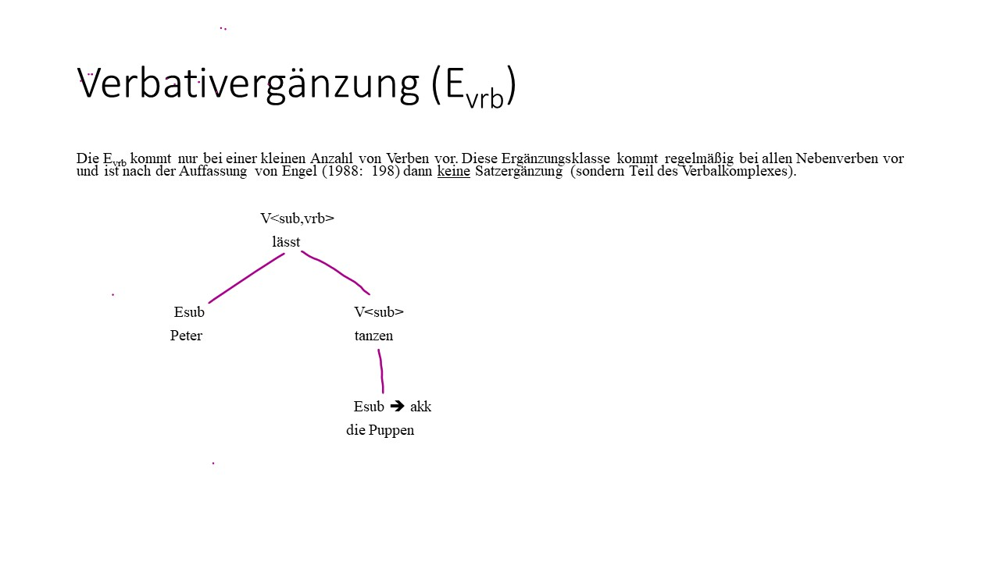
4.5 Angaben
(nach Engel 1988: 219-239)
0. ÜBERBLICK
Jeder Satz und jedes satzartige Konstrukt (Nebensätze, Infinitivsätze, satzwertige Partizipialkonstruktionen) kann durch Elemente erweitert werden, die nicht vom Verb ausgewählt werden, sondern frei hinzufügbar sind und lediglich von der Sprechsituation bestimmt werden. Diese Elemente heißen (freie) Angaben. Sie werden zwar wie die Ergänzungen vom Verb regiert, sind aber im Gegensatz zu den Ergänzungen nicht valenzbedingt, also nicht subklassenspezifisch (d.h. nicht spezifisch für bestimmte Verbklassen), und können daher prinzipiell zu den verschiedensten Verben hinzugefügt werden (sie passen prinzipiell zu allen Verben).
Engel (1988: 219) unterscheidet vier Großklassen von Angaben:
- modifizierende (modifikative) verbbezogene Angaben - Amod
- situierende (situative) satzbezogene Angaben - Asit
- negative Angaben - Aneg
- existimatorische äußerungsbezogene Angaben - Aex.
4.5.1 Modifizierende Angaben
Modifizierende Angaben beziehen sich auf das Hauptverb[1] eines Satzes. Sie modifizieren (d.h. verändern, wandeln ab) eine Handlung, einen Vorgang oder Zustand, der durch das Hauptverb eines Satzes ausgedrückt wird. Modifizierende Angaben können somit als verbbezogene Angaben charakterisiert werden.
Ausdrucksformen:
- Adverbien (1)
- Adjektive (in adverbialer Funktion) (2)
- Präpositionalphrasen (3)
- wie-Phrasen (4)
- Nebensätze (5).
- Ich habe die Frauen gern(e) geküßt.
- Paul hat trotz seiner großen Nase freiwillig an dem Schönheitswettbewerb teilgenommen.
- Die Studentin sprach mit großer Freude über die bestandene Deutschprüfung.
- Die neue Angestellte führte die Aufträge wie ihre Vorgängerin aus.
- Sie fuhr den Wagen, als ob sie von hundert Polizisten verfolgt würde.
Identifizierung mithilfe von:
- Anapher so
- Präpositionalphrase auf diese Art und Weise
- Frage mit Interrogativadverb wie.
(1a) Ich habe die Frauen so/auf diese Weise geküßt.
(1b) Wie habe ich die Frauen geküßt?
Modifizierende Angaben stehen gewöhnlich nahe dem Hauptverb. Wenn das Hauptverb als Inifinitiv oder Partizip II im rechten Klammerteil auftritt, kann die modifizierende Angaben nicht rechts davon erscheinen, sondern lediglich im Mittelfeld (d.h. zwischen finitem und infinitem Verb) und im Vorfeld von Aussagesätzen (d.h. vor dem finiten Verb eines Aussagesatzes).
(1c) * Ich habe die Frauen geküßt gern(e).
(1d) Gern(e) habe ich die Frauen geküßt.
4.5.2 Situierende Angaben
Es handelt sich hier um die am stärksten gegliederte und am häufigsten vorkommende Großklasse von Angaben. Alle situierenden Angaben haben die Funktion, den im Satz beschriebenen Sachverhalt in verschiedenartige (temporale, lokale, kausale u.a.) Zusammenhänge einzuordnen. Situierende Angaben beziehen sich somit auf den ganzen Satz und können daher als satzbezogene Angaben bezeichnet werden.
Zur Untergliederung dieser Großklasse verwendet Engel die herkömmliche semantische Subklassifikation.
Semantische Klassen:
- temporale - Atemp
- lokale und direktive - Alok und Adir
- kausale - Akaus
- konditionale - Akond
- konsekutive - Akons
- konzessive - Akonz
- finale - Afin
- instrumentale - Ainst
- restriktive - Arest
- komitative - Akom .
Zu den situierenden Angaben rechnet Engel auch die weiterführenden Angabesätze (S154).
Prinzipielle Ausdrucksformen:
- Adverbien
- Präpositionalphrasen
- akkusativische Nominalphrasen
- Adjektiv(alphrasen)
- Nebensätze.
Allerdings kommt nicht jede situierende Subklasse in allen oben genannten Ausdrucksformen vor.
Verschiebbarkeit:
Situierende Angaben sind besonders leicht verschiebbar.
Darin zeigt sich ihre starke Unabhängigkeit vom Verb bzw.
der Verbalphrase.
4.5.2.1 Temporalangaben
Temporalangaben situieren (betten ein) einen Sachverhalt in der Zeit.
Die zeitliche Situierung kann erfolgen:
- absolut, d.h.
durch Angabe der Jahreszahl, des Datums oder Uhrzeit (1)
- relativ - in Bezug auf die Sprechzeit (2)
- relativ - in Bezug auf andere im Text genannte Sachverhalte (3).
- Mein Bruder war am 13. Januar 1996 in Berlin.
- Gestern hatte ihre Tochter ein Rendez-vous mit unserem Jochen.
- Bernd lief schnell zur Post. Kurze Zeit später holte er seine Freundin ab.
Außerdem ist auch die Dauer eines Sachverhaltes zu berücksichtigen, d.h.
Temporalangaben,
- die einen Zeitpunkt nennen oder beschreiben oder
- die einen Zeitraum nennen oder beschreiben.
Die Substitutionsformen (Anaphern usw.) unterscheiden sich im Hinblick darauf.
Identifizierung mithilfe von:
- Anaphern dann, bis dann, seitdem oder so lange
- Präpositionalphrasen bis zu dieser/jener Zeit, seit dieser/jener Zeit
- Frage mit den Interrogativadverbien wann, bis wann, seit wann oder wie lange.
(1a) Mein Bruder wurde dann/zu jener Zeit geboren.
(1b) Wann wurde ihr Bruder geboren?
Die zeitliche Situierung kann im Deutschen erfolgen:
- ausschließlich durch Temporalangaben (4)
- in Kombination mit verbalen Tempusmorphemen (5).
Die verbalen Tempusmorpheme ermöglichen eine grobe zeitliche Situierung des Sachverhaltes, die Temporalangaben hingegen eine feinere zeitliche Situierung des Sachverhaltes.
- Friedensvertrag 1945 (Überschrift)
- Gestern verliebte sich ihre Tochter in unseren Jochen.
4.5.2.2 Lokal- und Direktivangaben
Lokalangaben (1-4) und Direktivangaben (5) situieren einen Sachverhalt im Raum.
Die räumliche Situierung kann erfolgen:
- absolut, d.h.
durch Nennung des Ortes oder Richtung (1),
- relativ - in Bezug auf die Redesituation (2),
- relativ - in Bezug auf andere im Text genannte lokale Bestimmungen von Sachverhalten (4).
Identifizierung mithilfe von:
- Anaphern da, dort, dahin, dorthin, von daher, von dort, dort hinüber, dort entlang u.a. (1b),
- Präpostionalphrasen (3b),
- Fragen mit den Interrogativadverbien wo, wohin, wo entlang u.a. (2b).
Ausdrucksformen:
- Adverbien (2a),
- Präpositionalphrasen (1a),
- Nebensätze (3a).
(1a) Ihr Bub hat unsere Tochter auf dem Hauptplatz vor allen Leuten geküßt.
(1b) Ihr Bub hat unsere Tochter dort vor allen Leuten geküßt.
(2a) Hier haben meine Eltern früher noch Kartoffeln angebaut.
Heute ist alles bebaut.
(2b) Wo haben deine Eltern früher noch Kartoffeln angebaut?
(3a) Wo heute die Straße verläuft, haben meine Eltern früher noch Kartoffeln angebaut.
(3b) An jenem Ort haben meine Eltern früher noch Kartoffeln angebaut.
(4) Wo heute die Hauptstraße verläuft, haben meine Eltern früher noch Kartoffeln angebaut.
Daneben stand ein großer Birnbaum.
Auf der anderen Seite des Feldes plätscherte ein kleiner Bach.
(5) Die attraktive Frau lächelte zu ihm hinüber.
Er lächelte.
Er lächelte wie ein kleines Kind (Vergleich).
Er lächelte sie an.
(Richtung) Sie lächelte ihm zu.
(Richtung) Sie lächelte ihm entgegen.
(Richtung) - Direktivangaben
(6) Sie fuhr ihm entgegen.
(Richtung = Direktivergänzung: Bei Fortbewegungsverben muss man eine Fortbewegungsichtung oder -bereich angeben.)
4.5.2.3 Kausalangaben
Kausalangaben nennen einen Grund, eine Ursache eines Sachverhaltes und charakterisieren den im Satz beschriebenen Sachverhalt als dessen Folge oder Auswirkung:
- Kausalangabe ———- Satzrest
Grund/Ursache —> Folge/Auswirkung
Zeit t1 ==> Zeit t2
Identifizierung mithilfe von:
- Anaphern darum, deshalb,
- Präpositionalphrasen aus diesem Grund,
- Fragen mit den Interrogativadverbien warum, weshalb, wieso.
Ausdrucksformen:
- Adverbien (2),
- Präpositionalphrasen (3),
- Nebensätze (4).
- Deshalb/darum glaube ich nicht an Gespenster.
- Aus diesem Grund sollten wir lieber nicht an Gespenster glauben.
- Weil in diesem Haus seltsame Dinge vor sich gehen, sollten wir lieber doch an Gespenster glauben.
Grund bzw.
Ursache können angegeben werden:
- absolut, d.h.
durch Nennung des Grundes bzw.
der Ursache (4),
- relativ - unter Verweis auf andere im Text genannte Sachverhalte (2, 3).
4.5.2.4 Konditionalangaben
Konditionalangaben nennen eine Bedingung für den im Satz beschriebenen Sachverhalt.
- Konditionalangabe — Satzrest
Bedingung —> ermöglichte Handlung/Geschehen/Zustand
Zeit t1 ==> Zeit t2
Identifizierung mithilfe von:
- Anaphern dann,
- Präpositionalphrasen unter dieser Voraussetzung, unter dieser Bedingung,
- Fragen mit den Interrogativadverbien wann.
Ausdrucksformen:
- Adverbien (2),
- Präpositionalphrasen (3),
- Nebensätze (4).
- Dann hätte ich noch eine Chance.
- Unter dieser Voraussetzung hätte sie noch eine Chance.
- Wenn sie ihre Bewerbung erneut einreichen würde, hätte sie noch eine Chance.
Die Bedingung kann angegeben werden:
- absolut, d.h.
durch Nennung der Voraussetzung bzw.
der Bedingung (4),
- relativ - unter Verweis auf andere im Text genannte Sachverhalte (2, 3).
4.5.2.5 Konsekutivangaben
Konsekutivangaben nennen eine Folge eines weiteren, im Satz beschriebenen Sachverhalts.
- Konsekutivangabe — Satzrest
Folge —> Erst-Handlung/Geschehen/Zustand
Zeit t2 ==> Zeit t1
Identifizierung mithilfe von:
- Fragen mit der PP mit welcher Folge, mit der NP welche Folge (2b, 2c).
Ausdrucksformen:
- Nebensätze (2a).
(2a) Er schob den Ärmel zurück, so daß Meusebach die Narbe sah.
(2b) Mit welcher Folge schob er den Ärmel zurück?
(2c) Welche Folge hatte es, daß er den Ärmel zurückschob?
Die Folge kann nur absolut angegeben werden, d.h. durch ihre Nennung (2a).
Verschiebungen:
Im Gegensatz zu den bisher besprochenen situierenden Angaben lassen Konsekutivangaben keine Voranstellung (d.h. Vorfeldstellung im Hauptsatz) zu, die Zwischenstellung (d.h. Einfügung ins Mittelfeld des Hauptsatzes) ist ungewöhnlich.
(2d) *So daß Meusebach die Narbe sah, schob er den Ärmel zurück.
(2e) ?Er schob, so daß Meusebach die Narbe sah, den Ärmel zurück.
Konsekutivangaben als Satzglieder sind zu unterscheiden von semantisch entsprechenden Attributsätzen, die im übergeordneten Satz ein Bezugselement haben (z.B. so).
- Der Boden war so heiß, daß wir Blasen an den Füßen bekamen.
4.5.2.6 Konzessivangaben
Konzessivangaben geben einen unzureichenden Gegengrund an, eine Bedingung, die eigentlich ein Geschehen verhindern sollte, sich aber als nicht stark genug erweist bzw. erwiesen hat.
- Konzessivangabe — Satzrest
Bedingung —> nicht verhinderte Handlung/Geschehen/Zustand
Zeit t1 ==> Zeit t2
Identifizierung mithilfe von:
- Anaphern trotzdem, dennoch, u.a.,
- Präpositionalphrasen trotz dieses Umstandes, ungeachtet des Umstandes,
- Nebensätze mit den Einleitungselementen obwohl, obgleich, obzwar, /wenn/ auch /wenn/ u.a.
Ausdrucksformen:
- Konjunktionadverbien (2),
- Präpositionalphrasen (3),
- Nebensätze (4).
- Trotzdem/dennoch ging er ohne Regenschirm weg.
- Trotz des strömenden Regens ging er ohne Regenschirm weg.
- Obwohl es in Strömen regnete, ging er ohne Regenschirm weg.
Die unzureichende Voraussetzung kann angegeben werden:
· absolut, d.h.
durch Nennung der unzureichenden Voraussetzung (3, 4),
- relativ - unter Verweis auf andere im Text genannte Sachverhalte (2).
4.5.2.7 Finalangaben
Finalangaben geben das Ziel oder den Zweck eines Sachverhaltes an:
- Finalangabe — Satzrest
Zweck, Ziel <— Handlung/Geschehen/Zustand
Zeit t2 <== Zeit t1
Identifizierung durch:
- Anaphern dafür,
- Präpositionalphrasen um dieses Umstandes willen, für diesen Zweck u.ä.,
- Fragen mit den Interrogativadverbien wozu, wofür, mit PP zu welchem Zweck.
Ausdrucksformen:
- Adverbien (2),
- Präpositionalphrasen (3),
- Nebensätze (5),
- Infinitivsätze (4).
- Dafür war er alles bereit zu tun.
- Um dieses Besitzes willen verließ er seine Frau.
- Sie gab ihre Stelle auf, um für ihre altersschwache Mutter zu sorgen.
- Sie gab ihre Stelle auf, damit ihre Mutter nicht ins Altersheim gehen müsse.
Der Zweck kann angegeben werden:
- absolut, d.h.
durch Nennung der unzureichenden Voraussetzung (3, 4, 5),
- relativ - unter Verweis auf andere im Text genannte Sachverhalte (2).
4.5.2.8 Instrumentalangaben
Instrumentalangaben geben das Mittel zur Erreichung eines Zieles an.
Identifizierung:
- Anapher damit,
- Präpositionalphrase mit diesem Mittel, mit dieser Sache, durch dieses Mittel,
- Frage womit, wodurch, mit welchem Mittel.
Ausdrucksformen:
- Adverbien,
- Präpositionalphrasen.
- Damit wird sie es wohl schaffen.
- Mit dieser Säge wird sie es wohl schaffen.
Das Mittel zur Erreichung eines Zieles kann angegeben werden:
- absolut, d.h.
durch Nennung der unzureichenden Voraussetzung (2),
- relativ - unter Verweis auf andere im Text genannte Sachverhalte (1).
4.5.2.9 Restriktivangaben
Restriktivangaben nennen eine beschränkende Bedingung für ein Geschehen, legen den Geltungsrahmen für einen Sachverhalt fest.
Ausdrucksformen:
- Adverbien (1),
- Partikeln auf -mäßig (5) (sehr produktiv in der Umgangssprache),
- unflektierte Adjektive bzw.
Partizipialphrasen mit solch einem Adjektiv (2),
- Präpositionalphrasen (3),
- Nebensätze vom Typ was … angeht/betrifft/anbelangt (4).
- Insofern ist er doch eigentlich ein glücklicher Mensch.
- Beruflich (gesehen) bin ich jetzt zufrieden.
- In dieser Hinsicht kann ich nicht klagen.
- Was die pädagogischen Fähigkeiten betrifft, ist sie die bessere.
- Verkehrsmäßig sind wir nicht schlechter dran als Österreich.
Identifizierung durch:
- Adverbien insofern,
- Fragen in welcher Hinsicht, inwiefern.
Die Einschränkung kann angegeben werden:
- absolut, d.h.
durch Nennung der Einschränkung (2, 4, 5),
- relativ - unter Verweis auf andere im Text genannte Sachverhalte (1, 3).
Restriktivangaben sind gewöhnlich betont und stehen fast immer am Satzanfang. Allerdings ist es möglich, einfachere Ausdrucksforemn auch ins Mittelfeld oder komplexere Formen auch ins Nachfeld zu verschieben.
4.5.2.10 Komitative Angaben
Komitative Angaben nennen zu einem Sachverhalt einen begleitenden oder fehlenden oder stellvertretenden Umstand.
Identifizierung:
- Anapher damit, mit ihm/ihr,
- Präpositionalphrase in Begleitung von jemandem/etwas u.a.,
- Frage mit wem, ohne wen (Person), sonst Erfragung nicht möglich.
Ausdrucksformen:
- Adverb,
- Präpositionalphrase,
- Nebensatz,
- Infinitivsatz.
- Sie ging mit ihrem Gast ins Theater.
- Er fuhr ohne Mantel zur Arbeit.
- Sie stimmten ab, ohne daß der Fall überhaupt diskutiert worden wäre.
- Sie stimmten ab, ohne überhaupt diskutiert zu haben.
Sofern Situativangaben als Nebensätze realisiert werden, sind über die angegebenen Beispiele hinaus noch zahlreiche weitere Subjunktoren sowie teilweise subjunktorlose Formen möglich.
Tests für die Identifizierung von freien Angaben (nach Helbig 1981???):

4.5.3 Negative Angaben
Negative Angaben negieren Sachverhalte oder Teile eines Sachverhaltes. Im Satz stehen sie hinter den satzbezogenen und vor den verbbezogenen Angaben.
Ausdrucksformen:
- Negationspartikel nicht,
- Konkurrenzformen keinesfalls, keineswegs,
- verstärkte Formen durchaus nicht, gar nicht, überhaupt nicht,
- Negationswörter mit situativer Komponente niemals, nirgends,
- u.a.
Negationsangaben kommen nicht in Nebensatzform vor.
Identifizierung: nicht erfragbar.
Position im Satz:
Die Negationspartikel ist allein nicht vorfeld- oder nachfeldfähig, auch im Mittelfeld hat sie als Satznegator eine relativ feste Position. Sie zeigt recht ähnliche Stellungseigenschaften wie die Gradpartikeln. Die übrigen Formen sind, ähnlich wie situierende Angaben, freier verschiebbar. Sie können auch allein ins Vorfeld verschoben werden (mehr in S179ff, S193, 195).
Die gesamte Skala der Negationsmöglichkeiten wird in E002-006 (Engel 1988) beschrieben.
4.5.4 Existimatorische Angaben
Nach (Engel 1988: 227-238).
Bedeutung: Einschätzung des Sachverhaltes durch den Sprecher.
Funktion: Äußerung zur Äußerung, manche zusätzlich auf spezielle Teile der Äußerung hin orientiert.
(1a) Die hat sogar einen Preis bekommen.
(1b) Die hat einen Preis bekommen, und das ist überraschend.
Einteilung in 7 Subklassen:
- kautive Angaben (z. B. geradezu), zusätzlich phrasenorientiert;
- selektive Angaben (z. B. besonders), zusätzlich phrasenorientiert;
- ordinative Angaben (z. B. erstens), meist zusätzlich satzorientiert;
- judikative Angaben (z. B. bemerkenswerterweise), zusätzlich satzorientiert;
- verifikative Angaben (z. B. tatsächlich);
- Abtönungselemente (z. B. ja, doch, eben, halt, denn, mal);
- Dativus ethicus oder ethischer Dativ (vor allem mir).
4.5.4.1 Kautive Angaben
- Bedeutung und Funktion: auf einzelnen Ausdruck hin orientiert und relativieren dessen Bedeutung; Vorsichtsmaßnahme.
- Formen: in erster Linie Gradpartikeln (z.B. fast, geradezu, gewissermaßen, sozusagen, teilweise); unflektiertes Adjektiv einfach und Ausdrücke wie: im allgemeinen, in gewisser Weise, ich möchte sagen (oft als Parenthese).
- Auf der Brücke konnte man die Gefahr geradezu spüren.
- Es geht - wie ich sagen möchte - um eine alte Bekannte.
- Es geht gewissermaßen um eine alte Bekannte.
- Sie ist einfach bezaubernd.
- Syntagmatische Eigenschaften: Verschiebung nur teilweise möglich:
- Es geht um eine alte Bekannte, wie ich sagen möchte.
- Gewissermaßen geht es um eine alte Bekannte.
4.5.4.2 Selektive Angaben
- Funktion: Hervorhebung eines Ausdrucks; Herstellung einer Beziehung zwischen verbalisiertem Sachverhalt und anderen möglichen;
- Formen:
- Gradpartikeln (allein, bereits, besonders, eben, gerade, insbesondere, sogar),
- unflektierte Adjektive ausgerechnet, vornehmlich und
- Ausdrücke wie vor allem.
- Du müßtest besonders achtgeben.
- Besonders du müßtest achtgeben.
- Vor allem muß man* auf *Pünktlichkeit achten.
- Syntagmatische Eigenschaften: unabhängig von Bezugswort verschiebbar;
- Vorkommensrestriktionen: nur in Konstativ- und Interrogativsätzen.
4.5.4.3 Ordinative Angaben
Funktion:
Äußerungen in Beziehung zu anderen (bzw. Teilen davon).Formen:
Partikeln allenfalls, allerdings, außerdem, beispielsweise, bestenfalls, bloß, doch, einerseits usw., erstens usw., ferner, freilich, immerhin, indessen, jedenfalls, jedoch, lediglich, nämlich, mindestens, nun (äußerungseinleitend), nur (äußerungseinleitend), obendrein, ohnedies, ohnehin, schließlich, schon, sowieso, überdies, übrigens, vielmehr, wenigstens, wohl (betont), zudem, zugleich, zumindest, zwar (äußerungseinleitend, verlangt aber o. a. im Folgesatz);
unflektierte Adjektive gewiß, sicher, tatsächlich, wiklich;
Ausdrücke wie auf der einen / anderen Seite, darüberhinaus, im übrigen, in erster Linie, unter anderem, zum Beispiel z.B.).Syntagmatische Eigenschaften: Bis auf nur und nun meist frei verschiebbar.
(10a) Wir haben allerdings nichts davon gewußt.
(Helbig 1988: Abtönungspartikel - AP)
(10b) Allerdings haben wir nichts davon gewußt.
(11) Er ist immerhin / schließlich dein Vater.
(Helbig 1988: AP)
(12) Nun / Nur konnte er das nicht wissen.
(13) Der Motor war sowieso schon veraltet.
(Helbig 1988: AP)
(14) Mir war das übrigens bekannt.
(Helbig 1988: AP)
(15) Zwar weiß ich viel, doch möcht’ ich alles wissen.
(Goethe)
4.5.4.4 Judikative Angaben
Funktion:
Bewertung des Sachverhalt durch Sprecher; Orientierung auf Satz.Formen: Modalpartikeln und Rangierpartikeln mit Ableitungssuffix -weise (z.B. bedauerlicherweise, bemerkenswerterweise, begreiflicherweise, erfreulicherweise, glücklicherweise, interessanterweise, seltsamerweise, unglücklicherweise, verständlicherweise).
Hinzu kommen andere Partikeln und Ausdrücke wie Gott sei Dank, leider, zu unserem (größten) Bedauern, zum Glück und
parenthetische Nebensätze wie was mir sehr leid tut, was ich bedauerlich finde.
(16a) Er hat das bemerkenswerterweise nicht erwähnt.
(16b) Bemerkenswerterweise hat er das nicht erwähnt.
(17) Es ist glücklicherweise nichts passiert.
(18) Das hat sie verständlicherweise verschwiegen.
(19) Sie kann es leider nicht besser.
- Syntagmatische Eigenschaften:
Partikeln weitgehend verschiebbar;
Weiterführende Angabesätze meist nachgestellt oder vorangestellt (dann mit Doppelpunkt), gelegentlich eingeschoben:
- Sie hat es wieder nicht geschafft, was mir sehr leid tut.
- Was mir sehr leid tut: Sie hat es wieder nicht geschafft.
- Sie hat es, was mir sehr leid tut, wieder nicht geschafft.
4.5.4.5 Verfifikative Angaben
Funktion:
modifizieren Realitätsgrad eines Sachverhaltes (illokutiv orientiert).Formen:
Modalpartikeln anscheinend, bekanntermaßen, bekanntlich, erwiesenermaßen, gewissermaßen, hoffentlich, logischerweise, möglicherweise, nachgewiesenermaßen, notwendigerweise, vielleicht, zweifellos, zweifelsohne; unflektierte Adjektive wie angeblich, bestimmt, eigentlich, eventuell, gewiß, nachweislich, natürlich, offenbar, offensichtlich, selbstverständlich, sicher, tatsächlich, vermutlich, wahrscheinlich, wirklich;
Ausdrücke wie an (und für) sich, im Grunde, mit Sicherheit, ohne Frage, ohne Zweifel;
Nebensätze wie sich leicht nachweisen läßt, wie ich hoffe; parenthetische Hauptsätze wie - (so) hoffe ich -.Vorkommensbeschränkungen:
meist in Aussagen, gelegentlich in Fragen.
(23a) Dies ist bekanntlich nicht das erste Mal.
(23b) Bekanntlich ist dies nicht das erste Mal.
(23c) Dies ist nicht das erste Mal bekanntlich.
(24) Er ist notwendigerweise mitschuldig.
(25) Sie könnte vielleicht etwas wissen.
(26) Hätten Sie vielleicht etwas Zucker?
(27) Eigentlich müßte sie das wissen.
(28) Wir werden Ihnen selbstverständlich den Schaden ersetzen.
(29) Er hat mit Sicherheit den Täter gesehen.
- Syntagmatische Eigenschaften: frei verschiebbar.
(30a) Wie sich leicht nachweisen läßt, hat sie in allem recht.
(30b) Sie hat, wie sich leicht nachweisen läßt, in allem recht.
(30c) Sie hat in allem recht, wie sich leicht nachweisen läßt.
(31a) Sie kann den Täter identifizieren, hoffe ich.
(31b) Sie kann, (so) hoffe ich, den Täter identifizieren.
4.5.4.6 Abtönungspartikeln
- Funktion: Orientierung auf illokutive Komponente der Äußerung; Redeabsicht modifizieren, zu verstärken, abzumildern o.ä.
- Der hat aber einen Bart!
- Ist das aber kalt!
- Franz hatte einen Kreislaufkollaps. - Der hat sich ja auch nie geschont.
- Es gibt wieder eine Weinschwemme, was ja nach dem regnerischen Sommer auch nicht anders zu erwarten war.
- Hast du auch alles eingepackt?
- Wie alt bist du denn?
- Ist er denn wirklich schon zu alt dafür?
- Wo kann man denn hier telefonieren?
- Auffallende formale Eigenschaften: Die meisten AP unbetont, nur integriert im Mittelfeld, vor Satznegation, satzmodusabhängig.
4.5.4.7 Dativus Ethicus
Bedeutung: Unruhe, innige Anteilnahme des Sprechers oder des Partners (selten einer anderen Person) an einem Sachverhalt.
Formen: meist Partnerpronomina, seltener reine reine Verweispronomina; immer unbetont, nie im Vorfeld.
Vorkommenspräferenzen: kaum in reinen Mitteilungen, meist in Ermahnungen, Vorwürfen (häufig ironisch), Aufforderungen u.ä.
- Du bist mir ein schöner Freund!
(41a) Du wirst mir noch aus dem Fenster fallen!
(41b) Fall mir nicht aus dem Fenster!
(41c) Daß du mir nicht aus dem Fenster fälltst!
- Der wird dir noch die ganze Konstruktion verwässern.
- Und daß du mir nicht der Tante Emma von diesem Ausflug erzählst!
- Sie kann dir dem General der Heilsarmee ein Glas Wein anbieten.
4.6 Verbalkomplex
Jedes satzartige Konstrukt (Hauptsatz, Nebensatz, Partphrase) enthält ein Verb, das Zahl und Art der Ergänzungen festlegt und damit die Grundstruktur des gesamten satzartigen Konstrukts bestimmt. Dieses Verb nennt Engel (1988: 443) das zentrale Verb.
Hauptsätze und finite Nebensätze enthalten immer ein finites Verb. Wenn sie nur eine einzige Verbform enthalten, fallen zentrales Verb und finites Verb notwendig zusammen.
Enthält ein satzartiges Konstrukt jedoch mehr als eine Verbform, so können zentrales Verb und finites Verb nicht identisch sein. Dann wird aus diesen Verbformen ein Verbalkomplex gebildet.
Als Regens der Ergänzungen gilt nicht nur das finite Verb, sondern der Verbkomplex, zu dem gemäß Latour (1985: 43 ff) folgende Elemente gehören:
- das zentrale Verb (finit oder infinit) [das in der folgenden Beschreibung ausgelassen wird],
- trennbare Verbzusätze (Verbpräfixe und die 1. unmittelbare Konstituente in Zusammensetzungen) (z.B. ankommen, untergehen),
- Modalverben (können, müssen, wollen,…),
- zeiten- und passivbildende Auxiliarverben* (haben, sein, werden),
- Reflexivpronomina (in Verbindung mit bestimmten Verben),
- Pronomen es (in Verbindung mit bestimmten Verben),
- Funktionsverbgefüge ( und einige andere lexikalische Fügungen).
Nach Engel (1988) gehören neben den oben angeführten noch einige weitere Verbklassen zum Verbalkomplex (siehe dazu den Überblick über den Prädikatskomplex).
Übersicht (Prädikatskomplex):
· das zentrale Verb,
· Auxiliarverben (haben, sein, werden),
· Modalverben (können, müssen, sollen,…),
· Modalitätsverben (scheinen, pflegen, sich trauen, …),
· Bewegungsverben (gehen, schicken, legen, …),
· modalitätsverbähnliche Verben (sein, bleiben, bekommen, …),
· Situativverben (sein, bleiben, haben),
· weitere Konstruktionen mit Partizip II.
(Er gibt das Spiel verloren., Wo steht das geschrieben?, Der Brief lag unter den Büchern versteckt.),
· Nebensatzverben, Infinitivverben, Partizipverben,
· trennbare Verbzusätze,
· Reflexivpronomina,
· Pronomen es,
· lexikalische Fügungen (Gefügenomina).
Situativverben: sein, bleiben, haben + Infinitiv (ohne zu)
z.B.
(36) Ich würde heute lieber im Bett liegen bleiben.
(37) Sie hat unheimlich viel Krimskrams in ihrem Zimmer herumliegen.
(38) Der Tisch soll so stehen bleiben.
4.6.1 Trennbare Verbzusätze
Engel & Schumacher (1978: 34 ff) und Engel (1988: 439 ff) verstehen unter Präfixverben lediglich Verben mit einem unbetonten, untrennbaren Morphem, das reihenbildend vor das Verb tritt oder zusammen mit dem Verb als isolierte Bildung vorkommt (z.B. beantragen, entscheiden, verbieten, verlieren, gewinnen). Von Verben mit Verbzusatz sprechen diese Autoren, wenn die erste unmittelbare Konstituente des Verbs betont und trennbar ist. (vgl. dazu auch Fleischer 19XX - Wortbildung der deutschen Gegenwartssprache).
Verbzusätze: Präpositionen (einladen, umsteigen),
Adjektive (krankmelden, breittreten),
Adverbien (weitererzählen, wiedergeben),
Nomina / Präpositionen + Nomina (radfahren - Rad fahren, zutagetreten - zu Tage treten) - [nach der neuen Rechtschreibung keine Zusammensetzungen !!!] ,
selten: Verben (kennenlernen - kennen lernen, liegenbleiben - liegen bleiben) - [nach der neuen Rechtschreibung keine Zusammensetzungen mehr!!!] .
Bei den Verben mit Verbzusatz besteht das Problem, zwischen echten komplexen Verben einerseits und Simplex mit freier Ergänzung zu unterscheiden. Kriterien zur Unterscheidung:
1. Komplexes Verb oder Simplex + Edir ? (Pseudoverbkomplex° )
a. Kommutiert das fragliche Element mit Präpositionalphrasen der E6 (Edir)?
z.B. (1) Komm herunter!
nach unten
- Der Gast geht hinein .
ins Hotel (hinein) .
- Der Fuchs kommt heraus .
aus dem Bau (heraus).
Die Adverbien sind fakultativ, mit der Präposition korresporendierende Teile der Edir
b. Ergibt die Kommutation des Simplex mit bedeutungsähnlichen Verben akzeptable Sätze?
z.B. (4) Der Gast geht
eilt hinein.
schleicht
…
Die Anaphorisierungsprobe ist nicht durchführbar, weil die Pronominaladverbien Anaphern sind.
Wenn die beiden Proben positiv ausfallen, dann ist das fragliche Element eindeutig als E6
(Edir) klassifizierbar. Damit sind Pseudoverbkomplexe (Verben + Pseudoverbzusatz) erwiesen (die folgenden Beispiele nach der Rechtschreibung bis 1998):
z.B. hinausklettern, hinübersetzen, dazwischenstellen, zurückgehen, fortlaufen, wegrennen, herunterfallen.
(vgl. Fleischer!)
2. Komplexes Verb oder Simplex + Esit?
Zur Identifikation können Proben angewandt werden, die den oben durchgeführten entsprechen:
a. Kommutierbarkeit mit Präpositionalphrase (Esit)?
b. Kommutation mit Synonymen u.a. – akzeptable Sätze?
z.B. (5) Es stand ein alter Nußbaum davor.
vor dem Haus.
- Die Katze sitzt fast immer dahinter.
hinter dem Kamin.
sitzt
- Die Katze hockt fast immer dahinter.
liegt
3. Komplexes Verb oder Simplex + Eadj (E8)?
a. Anaphorisierungsprobe (so, es, das ® E8) bzw. Erfragbarkeit durch Fragepartikel wie?
z.B. (8) Macht ihre Antwort dich glücklich? + + (Adjektivalergänzung)
- Du kannst mir nichts weismachen.
- (Teil des Verbkomplexes)
b. Kann das adjektivische Element im eingeleiteten Nebensatz bei einteiliger Konjugationsform vom Vf getrennt werden? (Fall Probe a negativ ausfällt, ist b zweifelhaft)
(==> Verbkomplex)
4.6.2 Komplexe Prädikate
Hilfsverben (zeiten- und passivbildende Auxiliarverben) sowie Modalveben und Modalitätsverben (Verben mit obligatorischem zu-Infinitiv) werden bei Engel & Schumacher (1978: 45) bzw. Engel (1988: 443 ff) als verbale Erweiterungen betrachtet, die für die syntaktische Vollständigkeit von Sätzen nicht konstitutiv sind und denen auch keine Valenz zukommt (vgl. Helbig & Buscha 1987).
Es gibt jedoch Fälle, die eine Interpretation dieser Verben als Vollverben nicht ausschließen. In diesen Fällen handelt es sich um sehr übliche Verwendungsweisen, die nicht durch die Textkonstitution motiviert sind. Die isolierten Sätze ohne Infinitiv (2) - (3) erwecken kaum den Eindruck syntaktisch unvollständiger (elliptischer) Sätze oder den Eindruck spontaner legerer Rede (wie es bei der Ellipse des Partizips in (1) der Fall ist.
z.B. (1) Er ist in die Stadt. (gegangen, gefahren, …)
Ich muss leider nach Hause. (gehen, fahren,…)
Ich möchte noch gern eine Tasse Tee. (haben)
Vf Vi
Im Gegensatz zu den eben behandelten (elliptischen) Fällen lassen sich für die Beschreibung von Hauptverben, Modalverben und Modalitätsverben + Infinitivum als Prädikatskomplexe starke Argumente anführen. Speziell bei infinitivischen Verbalsyntagmen tritt der Fall auf, dass zwischen
· infinitivischer satzförmiger Ergänzung einerseits,
· und Infinitivkonstruktion als Verbativergänzung Evrb (E9)oder
· als Teil eines Prädikatskomplexes andererseits unterschieden werden muß.
Engel & Schumacher (1978: 46 ff) haben die Kommutation des fraglichen Infinitivs mit einem nominalen Syntagma als Kriterium für seine Klassifikation als satzförmiger Ergänzung gewertet.
z.B. (4) Er versprach seiner Frau, ihr einen Netz zu schenken./
Er versprach seiner Frau einen Netz .
- Er denkt daran, den Plan zu verwirklichen.
Er denkt an die Verwirklichung des Plans.
- Er traut sich nicht zu widersprechen.
*Er traut sich keinen Widerspruch.
- Ich gedenke, das morgen zu tun.
*Ich gedenke des morgigen Tuns.
- Es gilt zu gewinnen.
*Es gilt der Gewinn.
- Es beginnt, kalt zu werden.
*Es beginnt mit dem Kaltwerden.
Das Merkmal der Anaphorisierung ist bei diesen Fällen ein zu schwaches Kriterium, da es eine Klassifizierung der Infinitivkonstruktion als Ergänzung erlauben würde.
z.B. (8’) Es gilt zu gewinnen./ Das gilt es.
(9’) Das traut er sich nicht.
Mit dem Kriterium der Kommutation sind aber nur die infinitivischen satzförmigen Ergänzungen eindeutig identifiziert. Zur Unterscheidung zwischen infinitivischer Evrb (E9)und dem Infinitiv eines Modalitätsverbs muss ein weiteres Kriterium herangezogen werden. Dieses Kriterium besteht in den unterschiedlichen Rektionsverhältnissen.
Bei Modalitätsverben wird das Vorhandensein einer Esub (E0) und deren semantische Füllung von dem abhängigen Infinitiv geregelt. Bei Verben + infinitivischer Evrb (E9)wird die Aktualisierung und semantische Füllung der Esub (E0) nicht vom abhängigen Infinitiv gesteuert. Die Esub bleibt in diesem Fall konstant, wenn man andere Verben als Infinitive einsetzt. Das Vf regelt die Esub.
z.B. (10) Es gilt zu gewinnen.
Es gilt, ihn willkommen zu heißen.
Er pflegt, samstags seine Einkäufe zu erledigen.
In dieser Gegend pflegt es häufig zu regnen.
Vollverb + infinitivische Evrb (E9) in (10) und (11). Modalitätsverb + abhängiger Infinitiv in (12) und (13).
Das Subjekt des Modalitätsverbs (Engel 1988: 477) und das Subjekt des abhängigen Verbs bezeichnen immer dieselbe Größe. Daher wird das Subjekt nur einmal genannt. Die besondere Problematik des Modalitätsverben liegt darin, dass es zu den meisten von ihnen homonyme Vollverben gibt. Zwischen homonymen Vollverben und Esub besteht eine Verträglichkeitsrelation, während Modalitätsverben mit beliebiger Esub kombinierbar sind (unter Beachtung der Verträglichkeit zwischen Esub und Infinitiv).
z.B. (14) Er verspricht ihr, sie zu besuchen. (VV)
*Das Wetter verspricht uns, schön zu werden. (Vn)
Er hat bei ihm nichts zu lachen.
Das Buch hat hier liegenzubleiben.
Die abhängige Infinitivkonstruktion beim Vollverb ist anaphorisierbar, bei den Modalitätsverben kann der abhängige Infinitiv nicht anaphorisiert und auch nicht kommutiert werden.
z.B.
- Das Wetter verspricht schön zu werden./
*Das Wetter verspricht es/das. (Vn)
- Er verspricht, morgen zu kommen./
Er verspricht es/das. (VV)
- Das verspricht ja heiter zu werden./
*Das verspricht Heiterkeit. (Vn)
- Er versprach, mir etwas zu schenken./
Er versprach mir ein Geschenk. (VV)
Schwieriger ist die Unterscheidung von Modalitätsverb und homonymem Vollverb bei anfangen, beginnen, aufhören, da in diesen Fällen auch bei den Vollverben die Esub des Vf und des Infinitivs referenzidentisch sind. Aber nur die Modalitätsverben können mit relativ beliebigen Esub kombiniert werden.
z.B. (22) Die Sache fängt an, mir Spaß zu machen.
Es fängt an zu regnen.
Der Blumenstrauß fängt an zu welken.
Aber nur:
- Klaus fängt (damit) an zu singen.
Nur der Infinitiv beim Vollverb ist anaphorisier-/ kommutierbar.
z.B. (25’) Klaus fängt damit an.
(25’’) Klaus fängt mit dem Singen an.
Der semantische Unterschied zwischen Vollverb und Vn besteht darin, dass das Vollverb auf eine intentionale Handlung referiert; das Modalitätsverb (Vn) bezeichnet nur den Beginn eines Prozesses.
Eine Gruppe von Verben (sein, bleiben, bekommen, kriegen, geben, es gibt) verhält sich ähnlich wie die Modalitätsverben (Vn).
z.B.
Das Problem ist kaum zu lösen.
Es bleibt noch viel für dich zu tun.
In diesem Restaurant bekommt man noch nach 2200 etwas zu essen.
Du kriegst es nichts mehr zu trinken!
Gib mir doch bitte noch etwas zu trinken!
In Köln gibt es viele schöne Kirchen zu besichtigen. (…,die man …)
Es gab eine Menge zu essen/zum Essen.
Diese Gruppe ist heterogen und zeigt gemäß Engel (1988: 51 ff) Abweichungen gegenüber den Modalitätsverben:
z.B. · Konkurrenzform zum werden-Passiv; +/-Esub (31)
· Infinitiv als Attribut zu Eakk (31),(32) – es gibt (31,32) + zu-Infinitiv (man +Vf)
Nebensatzverbkomplexe: zu den Nebensatzverben rechnet Engel (1988: 485): bedeuten, finden, sich fragen, es heißt, sich sagen, wähnen.
Nebensatzverben regieren nie Infinitivsätze. Zu den Nebensatzverben gibt es auch gleichlautende Verben mit anderer Bedeutung. Zu allen Nebensatzverben sind Perfektformen möglich, Passiv im allgemeinen nicht.
z.B. (33) Man bedeutete ihr, (dass) das Spiel entschieden sei.
Ich finde, er hat recht.
Sie fragte sich, ob er das wohl ernst meine.
Es heißt, Petra sei gestürzt.
Ich habe mir gesagt, dass da etwas wohl nicht stimmen kann.
Wähntest du etwa, ich sollte das Leben hassen?
Infinitivverbkomplexe: Nebenverben*, die immer ein anderes Verb im Infinitiv (einschließlich seiner Satelliten) regieren, jedoch eine andere Subjektgröße als dieses haben.
(± zu-Infinitiv)
z.B. (39) Man bedeutete ihr, den Hut abzunehmen. (gehoben)
Ich fühle die Erde f beben.
Es gibt eine Menge zu tun.
Ich hörte ihn f kommen. (® Fortbewegungsverben)
Partizipverbkomplexe: die Verben kommen, stehen. Das Subjekt des Partizipverbs und das des abhängigen Partizips sind identisch .
z.B.
Er kam ins Zimmer geschwankt.
In diesem Buch steht alles geschrieben, was …
Weitere Beispiele: Er gibt das Spiel verloren., Wo steht das geschrieben?, Der Brief lag unter den Büchern versteckt.
Komplexe mit finden uns sehen:
z.B.
Sie fand ihn an den Mauer lehnen/lehnend.
Sie fand ihn schlafend.
Sie fanden das Kind in Windeln gewickelt.
Ich sah ihn den Ast absägen
Sie sah ihn Nüsse knackend im Zimmer .
Sie wurde total vom Regen durchnässt gesehen.
Als Prädikatskomplexe auch (in)transitive Verben Vt /Vi + Infinitiv < + Bewegung >
z.B.
Ich gehe noch heute in die Stadt einkaufen.
Gehst du mit baden ?
Sie schickt den Jungen Brötchen holen.
(51’) Ich gehe noch heute in die Stadt, um einzukaufen.
(52’) Gehst du mit ins Freibad / ins Freibad baden.
Trotz der möglichen Kommutation haben sich Engel & Schumacher (1978: 51) dafür entschieden, den Infinitiv als Teil eines komplexen Prädikats zu beschreiben, »da im Falle der Kommutation des Infinitivs mit einer Edir (E6) in (34’) die Kodierung des Infinitivs als Satzergänzung theoretisch nicht vertretbar ist.«
Situativverben: sein, bleiben, haben + Infinitiv (ohne zu)
z.B. (54) Ich würde heute lieber im Bett liegen bleiben.
Sie hat unheimlich viel Krimskrams in ihrem Zimmer herumliegen.
Der Tisch soll so stehen bleiben.
4.6.3 Reflexivpronomina
Nicht alle Reflexivpronomina gehören zum Verbkomplex. Engel & Schumacher (1978: 42 ff) unterscheiden im KVL° folgenden Gruppen:
echt reflexive Verben
fakultativ reflexive Verben
partim reflexive Verben
reflexive Fügungen
reziproke Verben
a) echt reflexive Verben
Echt reflexive Verben liegen dann vor, wenn folgende Kriterien erfüllt sind:
· das Reflexivpronomen ist nicht weglassbar (Ausnahmen: z.B. Er irrt (sich).);
· der Austausch des Reflexivpronomens gegen einen anderen sprachlichen Ausdruck (ein anderes Pronomen, eine Nominalphrase, … ) ist nicht möglich.
z.B. (1) Er weigert sich, das zu glauben.
- Er hat sich dem Mädchen erklärt.
In (2) ist der Austausch nur mit Bedeutungsveränderung möglich.

b) fakultativ reflexive Verben
· das Reflexivpronomen ist weglassbar;
· das Reflexivpronomen kommutiert ebenfalls nicht mit anderen sprachlichen Ausdrücken (Pronomen, Nominalphrasen, …) oder der Austausch ergibt eine Bedeutungsveränderung
z.B. (3) Er hält (sich) eine Illustrierte.
c) partim reflexive Verben
Das Reflexivpronomen kommutiert mit einem anderen Glied im selben Kasus (eine Ex kann durch ein Reflexivpronomen realisiert sein), mit Nomina und Pronomina. In diesem Falle zählt das Reflexivpronomen nicht zum Verbkomplex, sondern hat den Status einer Ergänzung.
z.B. (4) Er verletzt sich.
wäscht den Hund.
ihn.
d) feste Fügungen mit Reflexivpronomen
Ein Reflexivpronomen kann Bestandteil einer (phraseologischen) verbalen Wendung sein.
Es ist · weder eliminierbar
· noch austauschbar gegen andere Pronomina oder Nomina.
Daher wird es von Engel & Schumacher als Bestandteil des Verbkomplexes gesehen.
z.B. (5) Er zerbricht sich den Kopf.
- Er setzt sich zur Ruhe. [V
- sich + Präp.
- NP]
- Er führt immer einen Regenschirm mit sich. [V + Präp.
- sich]
2 Typen: [V + sich + Präp. + NP] und [V + Präp. + sich].
e) reziproke Verben
In reziproker Bedeutung ist das Reflexivpronomen ersetzbar durch einander.
z.B. (8) Sie lieben sich. - Sie lieben einander (Er liebt sie, sie liebt ihn)
Das Reflexivpronomen in (8) hat den Status einer Ergänzung.
4.6.4 Pronomen es
Zu unterscheiden sind ein kommutierbares es (1) und ein nicht kommutierbares es. (2)-(12).
z.B. · (1) Das neue Auto ist teuer. Es ist teuer.
· (2) Es regnet.
· (3) Er nimmt es mit allen auf
- Er meint es gut mit dir.
· (5) Es gibt dort keinen Ärger mehr.
Es kam zu einem schweren Verkehrsunfall.
Es handelt sich um deine Anfrage.
Es fehlt (dir) an Mut.
Es kommt auf das Ergebnis an.
· (10) Es wurden 30 Typhusfälle gezählt.
Es ist ein schreckliches Unglück passiert.
Es heißt, dass ihre Firma in Konkurs geht.
Das nicht-kommutierbare es wird zum Verbalkomplex, und nicht als Ergänzung gerechnet. Das hat die Konsequenz, dass einige der angeführten Sätze kein Subjekt haben. Andere Grammatiktheorien sprechen in einem solchem Falle von einem formalen Subjekt. In (10), (11) ist es stellungsgebunden: eliminiert man es an dieser 1. Stelle des Satzes, so wird der Aussagesatz (konstative Satz) zum Fragesatz; stellt man ein anderes Satzelement an die Spitze des Satzes, so fällt dieses es weg.
Daher kategorisiert Latour (1985:46) dieses nicht-kommutierbare stellungsgebundene Pronomen es weder als abhängiges Satzglied noch dem Verbalkomplex zugehörig.
4.6.5 Funktionsverbgefüge und andere lexikalische Fügungen
Der Begriff der lexikalischen Fügung deckt einen Bereich ab, der sehr heterogen ist in Bezug auf die interne syntaktische Struktur wie auch in Bezug auf den Verschmelzungsgrad der einzelnen Teile dieser Fügungen. Die verbabhängigen Bestandteile (Nomina, Adjektive, Verben, Pronomina) können nicht als Ergänzungen beschrieben werden, da die Anaphorisierungsprobe negativ ausfällt, sondern als Teile des Verbkomplexes.
z.B. (1) Sie steht dem Maler Modell. (Eakk - E1?)
*Sie steht es dem Maler.
- Ich lasse mich nicht für dumm verkaufen. (Eprp - E4?)
*Ich lasse mich nicht dafür verkaufen.
- Er hat die Sache im Griff. (Esit - E5?)
*Er hat die Sache dort.
- Seine Ausbildung stand in Frage. (Esit - E5?)
*Seine Ausbildung stand dort.
- Der Plan kommt zur Erörterung. (Edir - E6?)
*Der Plan kommt dorthin.
- Er hat es im Leben weit gebracht. (Eadj - E8?)
*Er hat es im Leben so gebracht.
Diese Fügungen können durch (z.T.) Attribute erweitert werden, d.h. ihre interne Struktur ist z.T. veränderbar. Bei den attribuierbaren Fügungen handelt es sich in erster Linie um eine bestimmte Gruppe von Funktionsverbgefügen, in denen das Verb nur noch strukturelle Verbfunktionen ausübt, während das Gefügenomen (in der Regel ein Deverbativum) einen verbalen Inhalt (meist eine Handlung oder einen Vorgang) ausdrückt.
Die attributiven Erweiterungen können verschiedener Art sein.
z.B. (7) Er kam in Gefahr, sein Leben zu verlieren.
Er kam in Lebensgefahr.
In (7) kommutiert der infinitivische Attributsatz mit der ersten unmittelbaren Konstituente einer Zusammensetzung.
In (8) kommutiert ein Possesivpronomen mit einem attributiven Adjektiv, mit einem attributiven Genitiv und mit der ersten unmittelbaren Konstituente einer Zusammensetzung.
z.B. (8) Das Land steht unter der Kontrolle des Militärs.
Das Land steht unter seiner Kontrolle.
Das Land steht unter militärischer Kontrolle.
Das Land steht unter Militärkontrolle.
Soll man die (meist) von den Nomina abhängigen Elemente als Attribute betrachten, oder soll man sie in Abhängigkeit von der gesamten Fügung sehen, d.h. als Ergänzungen (besonders bei den Funktionalverbgefügen gut vorstellbar – die Basisverben sind nämlich kommutierbar).
z.B. (9) in Bewegung setzen - bewegen
in Aufregung bringen - aufregen
unter Kontrolle stehen - kontrolliert werden
(Funktionalverbgefüge – Basisverben: leisten aktionale Differenzierung)
Engel & Schumacher (1978: 41) haben sich entschlossen, dieses Problem im Kleinen Valenzlexikon auszuklammern (»*«) und begnügen sich mit Beispielsätzen.
Die Gefügenomina (und die Nomina in anderen lexikalischen Fügungen) werden nicht als Ergänzungen gesehen, sondern bilden zusammen mit dem Verb (und Präposition) den Verbkomplex, denn die Gefügenomina sind nicht anaphorisierbar (Latour 1985: 46 und Engel & Schumacher 1978: 38 ff. behandeln nur Funktionalverbgefüge mit Präpositionalphrasen »pS«, bei Helbig/Buscha 1987 auch andere Typen).
Die hauptsächliche semantische Leistung der Funktionsverbgefüge besteht darin, dass sie ein Geschehen folgenderweise markieren (Helbig/Buscha, S.103):
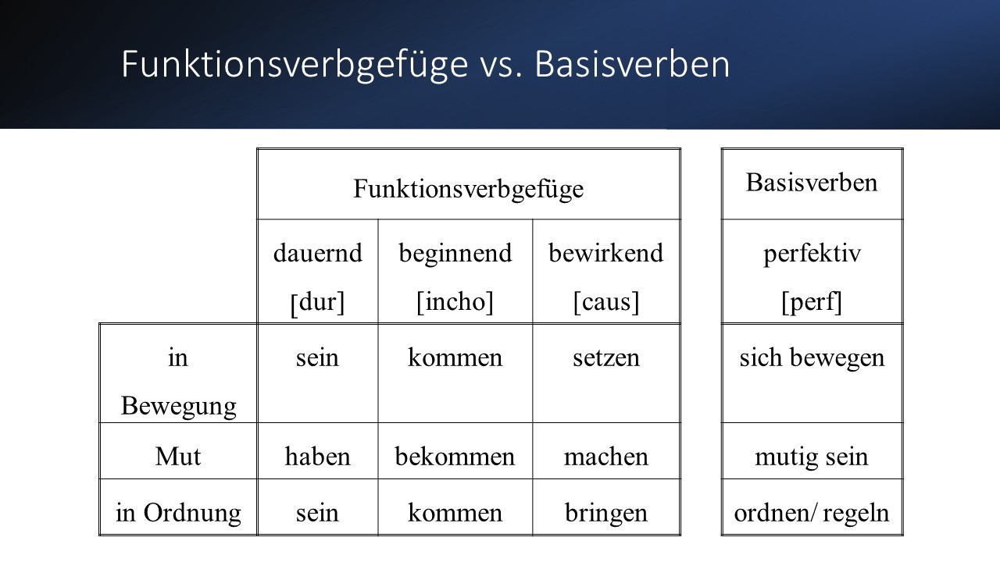
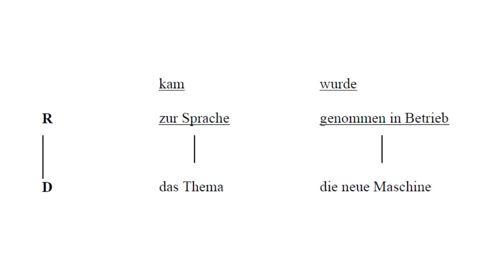
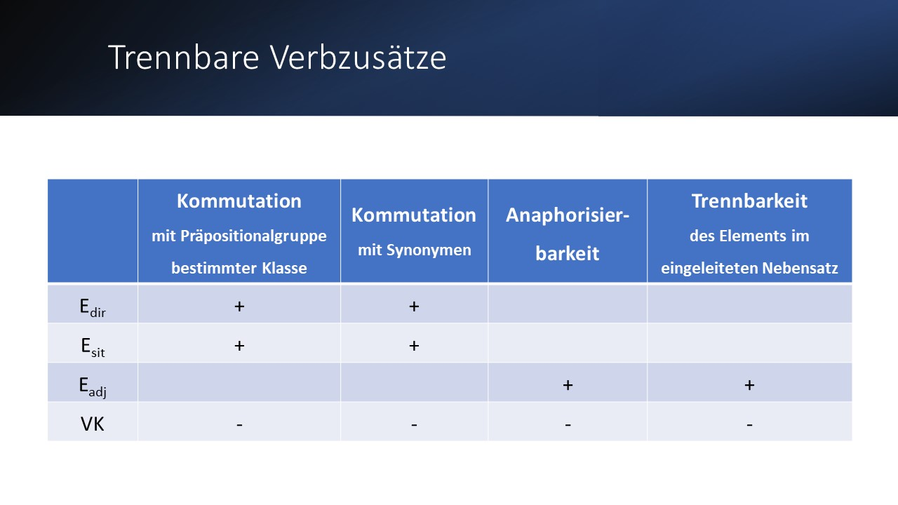


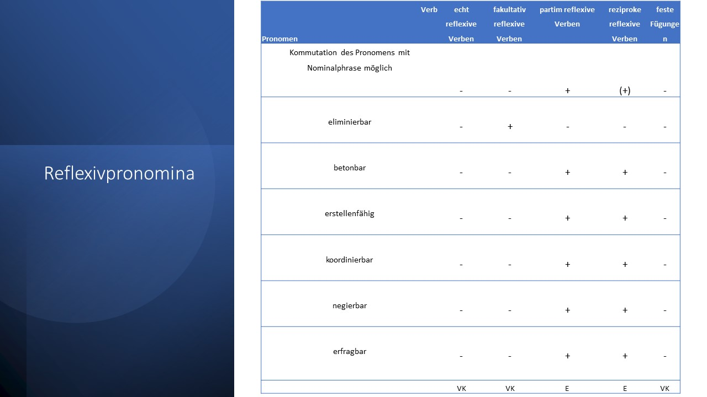
° Ein Pseudoverbkomplex ist ein Verb, dessen erstes Kompositionsglied als Ergänzung beschrieben werden kann.
° KVL ( Engel & Schumacher: Kleines Valenzlexikon deutscher Verben; 1978)
4.7 Leipziger Valenzmodell
Ende der 60-er Jahre entstand im Leipziger Linguistenkreis um Gerhard Helbig ein Valenzmodell, das seinen Niederschlag u.a. im “Wörterbuch zur Valenz und Distribution deutscher Verben” von G. Helbig und W. Schenkel fand. Dieses Modell ging zunächst von der syntaktischen Valenz (d.h. von der Valenz der Ausdrucksebene) und von der Wortart “Verb” aus (erst später - in den 70-er Jahren - Übertragung auf andere Wortarten - Adjektiv, Substantiv)
Zu den valenzgebundenen (“syntaktisch notwendigen”) Gliedern gehören solche, die im entsprechenden Stellenplan des Verbs verankert und folglich für dessen Subkategorisierung von Bedeutung sind. Dabei wird im dreistufigen Modell unter Valenz die Fähigkeit des Verbs verstanden, bestimmte Leerstellen um sich herum zu eröffnen, die durch obligatorische oder fakultative Aktanten zu besetzen sind (Valenz hier im semantischen und syntaktischen Sinne gefasst!).
Leerstellen: die vom Valenzträger (hier: Verb) gefordert und obligatorisch bzw. fakultativ zu besetzenden Stellen, die im “Stellenplan” des Verbs (bzw. eines anderen Valenzträgers) verankern und in dessen Bedeutung angelegt sind.
Aktanten (“Mitspieler”) Glieder, die diese Leerstellen besetzen.
Zu adäquaten Beschreibung der Aktanten muss man kennen:
a) ihre Zahl und
b) ihre Art (syntaktisch und semantisch), d.h.
die Distribution des Valenzträgers: im Anschluss an Harris verstehen Helbig & Schenkel unter Distribution eines sprachlichen Elements “die Summe aller Umgebungen, in denen es vorkommt”.
Auszusondern sind die valenzabhängigen Glieder. Die valenzabhängige Umgebungen (Kontexte) sind also nur eine Untermenge der Umgebungen (Distribution) des Valenzträgers (Verb).
Entsprechend dieser Bestimmungen der Begriffe “Valenz” und “Distribution” werden im Helbig & Schenkels Valenzwörterbuch die Verben auf folgende 3 Stufen interpretiert:
1.
die quantitative Anzahl der Aktanten:
z.B.: erwarten 2 , rauben 2+(1)=3
2.
die quantitative Festlegung der Aktanten:
durch Angabe der syntaktischen Umgebungen der Verben in streng formalen Begriffen (“strenge Subkategorisierungsregeln”)
z.B.: Sn, Sa, Sd, pS, NS, J,…
z.B.: geben 3 —> Sn, Sa, Sd
legen 3 —> Sn, Sa, pS
berichten 1+(2)=3 —> Sn, (Sd), (Sa/pS/NS)
z.B.: (1) Ich berichte.
(2) Ich berichte ihm.
(3) Ich berichte ihm mein Erlebnis / über meine Reise / ,wo ich gewesen bin.
• Vergleichen Sie mit dem Valenzmodell von Engel (1988), Engel & Schumacher (1978), Latour (1985)!
3. die qualitative Festlegung der Aktanten durch Angabe der semantischen Umgebung der Verben (“Selektionsregeln”) - mit Hilfe von Begriffen wie z.B.: Hum, Abstr,…
z.B.: (4) Die Jungen bewundern ihre Aufrichtigkeit.
(5) * Ihre Aufrichtigkeit bewundert die Jungen.
bewundern:
I.
2
II.
Sn Sa
III.
+Anim O; + Hum O; - Abstr.
O
• Vgl.
Sie mit H/B (1987,625)!
• Vgl.
Sie wiederum mit den Mannheimer Valenzmodellen!
[1] Die Hauptverben (in anderen Grammatiken meist Vollverben genannt) sind im Gegensatz zu den Nebenverben und Funktionsverben in der Lage, ohne weitere Verben bzw. stützende Nominal- oder Präpositionalphrasen einen Satz zu konstituieren - z.B. in der finiten Verbform (Engel 1988: 409).
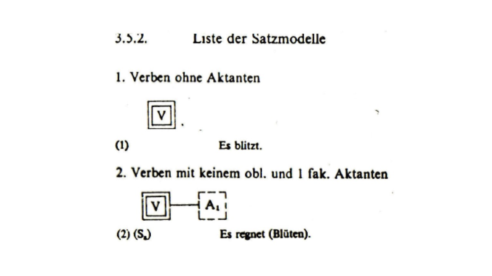
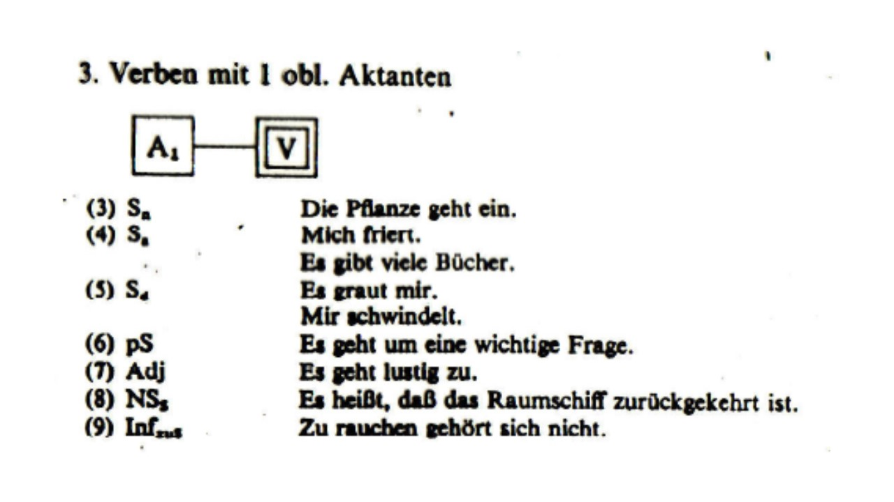
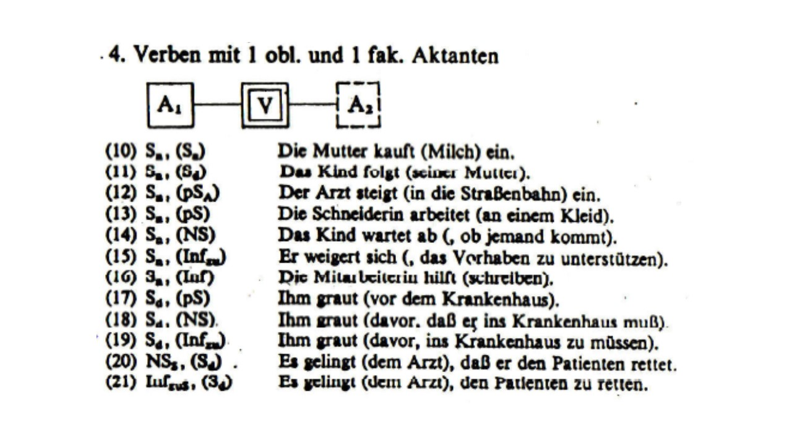
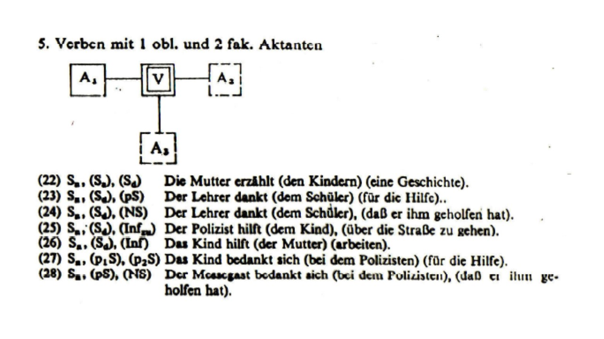